<!doctype html>
<html lang="en">
<head>
  <meta charset="utf-8">
  <meta name="viewport" content="width=device-width, initial-scale=1">
  <title>arxiv digest — 2026-07-15</title>
  <style>
:root {
  --bg: #ffffff;
  --fg: #1f2328;
  --muted: #59636e;
  --border: #d0d7de;
  --card: #f6f8fa;
  --link: #0969da;
}
body {
  max-width: 980px;
  margin: 0 auto;
  padding: 2rem 1rem 5rem;
  font-family: -apple-system, BlinkMacSystemFont, "Segoe UI", Helvetica, Arial, sans-serif;
  line-height: 1.55;
  color: var(--fg);
  background: var(--bg);
}
a { color: var(--link); }
img { max-width: 100%; height: auto; }
pre, code { background: var(--card); border-radius: 6px; }
pre { padding: 1rem; overflow-x: auto; }
blockquote { border-left: 4px solid var(--border); padding-left: 1rem; color: var(--muted); }
details { margin: 0.6rem 0; }
summary { cursor: pointer; font-weight: 600; }
.paper-figures-scroll {
  display: flex;
  gap: 1rem;
  overflow-x: auto;
  overscroll-behavior-x: contain;
  padding: 0.75rem 0.25rem 1rem;
  margin: 1rem 0 1.25rem;
  border-top: 1px solid var(--border);
  border-bottom: 1px solid var(--border);
  scroll-snap-type: x proximity;
}
.paper-figure-card {
  flex: 0 0 min(260px, 72vw);
  scroll-snap-align: start;
  background: var(--card);
  border: 1px solid var(--border);
  border-radius: 12px;
  padding: 0.55rem;
}
.paper-figure-card img {
  display: block;
  width: 100%;
  max-height: 240px;
  object-fit: contain;
  background: white;
  border-radius: 8px;
}
.paper-figure-caption {
  display: block;
  margin-top: 0.5rem;
  color: var(--muted);
  font-size: 0.85rem;
}
.figure-strip-hint {
  color: var(--muted);
  font-size: 0.9rem;
  margin-bottom: -0.3rem;
}
</style>
  <!-- MathJax: renders $...$ inline math and $$...$$ display math, plus
       \(...\) and \[...\]. Loaded from the official CDN; works offline
       once cached. Configured to skip code/pre blocks so arxiv IDs that
       look like dollar amounts don't get mangled. -->
  <script>
    window.MathJax = {
      tex: {
        inlineMath: [['$', '$'], ['\\(', '\\)']],
        displayMath: [['$$', '$$'], ['\\[', '\\]']],
        processEscapes: true,
        processEnvironments: true
      },
      options: {
        skipHtmlTags: ['script', 'noscript', 'style', 'textarea', 'pre', 'code'],
        ignoreHtmlClass: 'tex2jax_ignore',
        processHtmlClass: 'tex2jax_process'
      }
    };
  </script>
  <script id="MathJax-script" async
    src="https://cdn.jsdelivr.net/npm/mathjax@3/es5/tex-chtml.js"></script>
</head>
<body>
<header style="background-color: #333; color: white; padding: 15px; margin-bottom: 20px;">
  <h1 style="margin: 0; font-size: 24px;">
    <a href="https://ochelpan.github.io/arXiv_clean/" style="color: white; text-decoration: none;">Main</a>
  </h1>
</header>

<h1>Daily arXiv Report</h1>

<hr>
<p>
<a href="index.html">← Index</a>
 · <a href="papers_05.html">← Previous</a> · <a href="papers_07.html">Next →</a>
</p>
<hr>

<h2>Papers 101–120</h2>
<p><a id="paper-2607.10274"></a></p>
<h3 id="efficient-circuit-transpilation-of-commuting-gates-on-2d-grids"><a href="http://arxiv.org/abs/2607.10274v1">Efficient Circuit Transpilation of Commuting Gates on 2D Grids</a></h3>
<p><strong>Authors:</strong> Sabina Drăgoi, Daniel J. Egger<br>
<strong>Type:</strong> both · <strong>Category:</strong> quantum information and computing · <strong>PDF:</strong> <a href="https://arxiv.org/pdf/2607.10274v1">https://arxiv.org/pdf/2607.10274v1</a><br>
<strong>Analysis basis:</strong> full PDF text, analyzed in chunks
<strong>Topic relevance:</strong> <code>QC/QI experiment</code> <strong>2/5</strong> · <code>analog quantum simulation</code> <strong>1/5</strong> · <code>methods for driven-dissipative</code> <strong>1/5</strong> · <code>non-equilibrium dynamics</code> <strong>1/5</strong></p>
<div class="figure-strip-hint">↔ Scroll figures horizontally</div>
<div class="paper-figures-scroll">
<figure class="paper-figure-card">
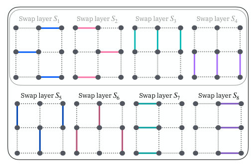
<figcaption class="paper-figure-caption"><b>Fig 1.</b> Figure 1: Example of two basis sets of SWAP layers for a 3 × 3 grid: Bgrid (top row) and its extended version Bextended grid (all). Here, each dot is a qubit, and the dashed lines show the coupling map. The highlighted edges in each SWAP layer show SWAP gates between qubits.</figcaption>
</figure>
<figure class="paper-figure-card">
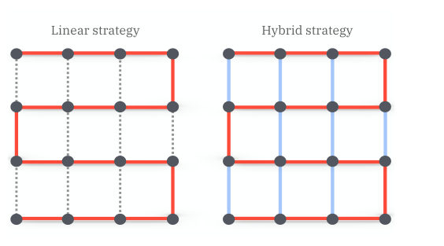
<figcaption class="paper-figure-caption"><b>Fig 2.</b> Figure 2: Linear and hybrid strategy on a 4 × 4 rectan- gular grid coupling map. Both strategies route along the longest line of qubits (red), but the hybrid strategy can additionally apply interactions on the remaining edges of the coupling map (light blue).</figcaption>
</figure>
<figure class="paper-figure-card">
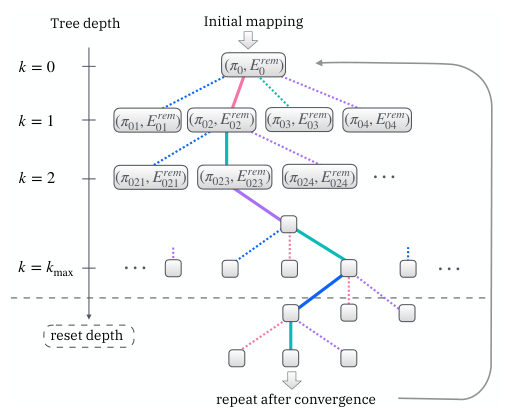
<figcaption class="paper-figure-caption"><b>Fig 3.</b> Figure 3: Greedy searches a tree of SWAP layer se- quences. The edges correspond to SWAP layers and are colored according to the basis Bgrid shown in Fig. 1. The nodes encode qubit layouts π and the remaining inter- actions Erem. At depth k = 1, possible layouts are de- noted by π01, π02, π03, π04, corresponding to their respect- ive SWAP sequences. The tree is explored up to a fixed depth kmax, after which a leaf minimizing the number of remaining edges is selected to continue the search until all interactions are implemented, yielding Sgreedy.</figcaption>
</figure>
<figure class="paper-figure-card">
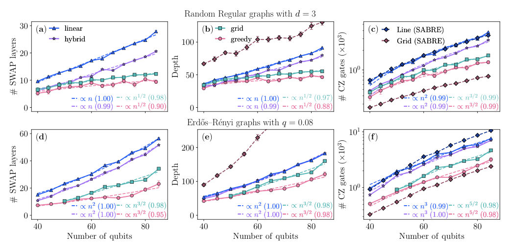
<figcaption class="paper-figure-caption"><b>Fig 4.</b> Figure 4: Circuit complexity versus graph size of e−iγHC transpiled to a rectangular grid with different strategies. The linear strategy is the current state-of-the-art and is based on (Sline, Cline grid); the hybrid one is our first contribution and is based on (Sline, Cgrid); the grid strategy uses (Sgrid, Cgrid) [23]; the greedy strategy is our main contribution and uses (Sgreedy grid , Cgrid); the Line (SABRE) and Grid (SABRE) methods use the out-of-the-box Qiskit transpiler [20, 21, 38] on Cline grid and Cgrid, respectively. The Line (SABRE) results are omitted from panels (b) and (e) because they fall outside the plotted range. Scalings are derived in App. C. Fits are performed on...</figcaption>
</figure>
<figure class="paper-figure-card">
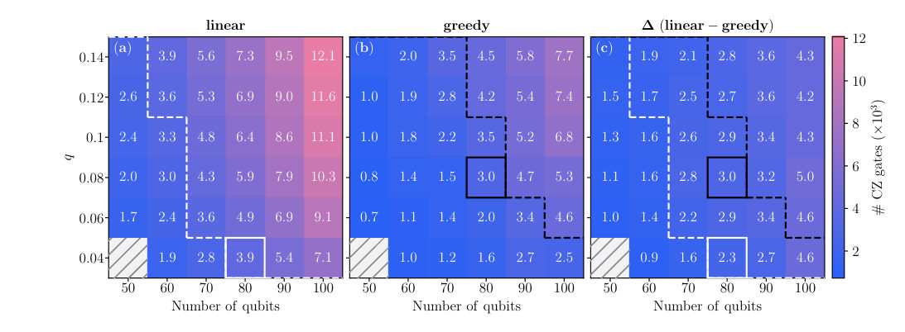
<figcaption class="paper-figure-caption"><b>Fig 5.</b> Figure 5: Entangling gates scaling of e−iγHC transpiled ton a grid with the linear (a) and greedy (b) SWAP strategies versus the graph size and edge density of the underlying Erdős–Rényi graphs. Each data point is the average of ten instances. The colors and numbers show the number of CZ gates. White and black dashed lines indicate the estimated ∼3,600 CZ gates feasibility thresholds for linear and greedy strategies, respectively, which assumes optimistic error rates, not those of the hardware device. The region between them in (c) marks instances enabled by our approach. Graphs highlighted by the white square have a similar density as the RR graphs in the hardware experiments from Fig....</figcaption>
</figure>
</div>

<p><strong>Summary.</strong> This paper presents a novel transpilation scheme for mapping quantum circuits involving commuting gates onto 2D lattice hardware. By iteratively optimizing both the required SWAP layers and the qubit layout, it achieves substantial reductions in circuit depth compared to existing methods. This efficiency boost allows for testing larger-scale QAOA applications on hard combinatorial problems.</p>
<p><strong>Why it may be interesting.</strong> While focused on optimization algorithms, the underlying need to map abstract Hamiltonians onto physical hardware connectivity maps directly to resource constraints in simulating complex quantum many-body systems or designing quantum network protocols.</p>
<details>
<summary>Detailed structure</summary>
<p><strong>Main problem.</strong> The core challenge is developing efficient transpilation schemes for quantum circuits, particularly those involving blocks of commuting two-qubit gates, to run on hardware with limited connectivity.</p>
<p><strong>Main result.</strong> The proposed greedy transpilation scheme significantly reduces circuit depth and gate count (by a factor of two) compared to standard methods, enabling larger qubit counts and improving approximation ratios for optimization problems like Max Cut and MIS.</p>
<p><strong>Method.</strong> The authors propose an iterative method that alternates between constructing problem-dependent SWAP-layer sequences and optimizing the initial qubit layout by adapting routing directly to required interactions.</p>
<p><strong>Model / system.</strong> The work focuses on quantum computation implemented on a two-dimensional lattice grid. The circuits are used for Quantum Approximate Optimization Algorithm (QAOA) applied to combinatorial optimization problems like Maximum Cut (MC) and Maximum Independent Set (MIS).</p>
<p><strong>Key observables.</strong> Circuit depth, gate count, mean approximation ratio, and kept shot ratio.</p>
<p><strong>Important parameters / regimes.</strong> The number of qubits ($n$), the circuit depth parameter ($p$) in QAOA, and the graph structure (Random Regular or Erdős-Rényi graphs).</p>
<p><strong>Assumptions / limitations.</strong> The method assumes the underlying hardware supports two-dimensional grid connectivity; standard optimal qubit routing is noted to be NP-complete.</p>
<p><strong>Figures summary.</strong> Figures compare circuit complexity (SWAP layers, CZ gates) across various transpilation strategies (linear, hybrid, greedy) on different graph types. Other figures illustrate the search process and performance metrics like approximation ratios vs. qubits.</p>
<p><strong>Paper structure.</strong> The paper introduces the problem of efficient transpilation for QAOA circuits on 2D grids. It details the proposed greedy strategy by optimizing both SWAP layer sequences and initial mappings, benchmarking it against established line-based and grid-based reference strategies across MC and MIS instances.</p>
</details>
<details>
<summary>Abstract</summary>
<p>Combinatorial optimization problems are central to many applications but can be challenging to solve. Quantum approaches such as the Quantum Approximate Optimization Algorithm (QAOA) offer new tools with which to tackle such problems. However, QAOA circuits inherit the interaction structure of the target Hamiltonian, often resulting in deep circuits when compiled onto hardware with limited connectivity. Efficient transpilation is therefore critical to their practical performance. In this work, we propose a transpilation scheme for circuits consisting of blocks of commuting two-qubit gates on two-dimensional lattices. Unlike standard approaches based on random initial mappings and fixed routing, our method alternates between constructing problem-dependent SWAP-layer sequences and updating the qubit layout. By adapting the routing to the required interactions, this yields significantly shorter circuits for graphs with few edges. We benchmark our approach on QAOA instances for Maximum Cut (MC) on Random Regular graphs and Maximum Independent Set (MIS) on Erdős-Rényi graphs. Compared to standard methods, we reduce circuit depth and gate count by about a factor of two, enabling experiments with up to $80$ qubits and improving approximation ratios by up to $6.6\%$ for MC and $9.3\%$ for MIS.</p>
</details>
<p><sub><a href="#top">↑ back to top</a></sub></p>

<p><a id="paper-2607.09857"></a></p>
<h3 id="gauge-invariant-thermodynamics-of-a-finite-time-quantum-otto-engine"><a href="http://arxiv.org/abs/2607.09857v1">Gauge-invariant thermodynamics of a finite-time quantum Otto engine</a></h3>
<p><strong>Authors:</strong> Midana Baial Sambú, Thiago R. de Oliveira, Lucas C. Céleri<br>
<strong>Type:</strong> theory · <strong>Category:</strong> statistical mechanics · <strong>PDF:</strong> <a href="https://arxiv.org/pdf/2607.09857v1">https://arxiv.org/pdf/2607.09857v1</a><br>
<strong>Analysis basis:</strong> full PDF text, analyzed in chunks
<strong>Topic relevance:</strong> <code>non-equilibrium dynamics</code> <strong>2/5</strong> · <code>driven-dissipative phase transition</code> <strong>1/5</strong> · <code>methods for driven-dissipative</code> <strong>1/5</strong> · <code>non-equilibrium universality</code> <strong>1/5</strong></p>
<div class="figure-strip-hint">↔ Scroll figures horizontally</div>
<div class="paper-figures-scroll">
<figure class="paper-figure-card">
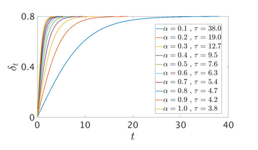
<figcaption class="paper-figure-caption"><b>Fig 1.</b> FIG. 1. Driven protocol. The figure shows the expansion protocol defined in Eq. (13) for δ1 = 0 and δ2 = 0.8, for several values of the driving parameter α. The duration of each protocol, indicated in the legend, is chosen such that all protocols connect the same initial and final Hamiltonians within the prescribed numerical tolerance discussed in the text. This construction enables a fair comparison between different driving rates by ensuring that the thermodynamic cycle always starts from Hδ1 and ends at Hδ2. Since we set γx = 1, time is dimensionless, as are the parameters δ and α. The corresponding compression protocol follows the same trajectory in parameter space in the opposite...</figcaption>
</figure>
<figure class="paper-figure-card">
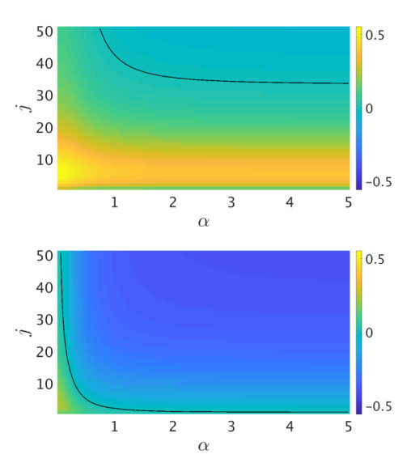
<figcaption class="paper-figure-caption"><b>Fig 2.</b> FIG. 2. Heat absorbed from the hot reservoir, normalized by jδ0, as a function of the driving parameter α and the total angular momentum j. The upper panel corresponds to δ1 = 0 and δ2 = 0.3, for which the protocol remains within the broken phase of the LMG model. The lower panel shows the case δ1 = 0 and δ2 = 0.8, where the protocol crosses the dynamical critical point. The condition Qh = 0, which separates the heat-engine regime (Qh &gt; 0) from a regime in which the hot reservoir no longer supplies energy to the working medium is shown with the black line. Since we set γx = 1, the parameters δ and α are dimensionless. For both plots we take Th = 4Tc.</figcaption>
</figure>
<figure class="paper-figure-card">
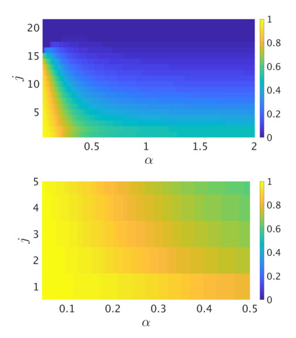
<figcaption class="paper-figure-caption"><b>Fig 3.</b> FIG. 3. Ratio between the gauge-invariant and the usual work, κ, shown as a function of the driving parameter α and the total angular momentum j. The upper panel corresponds to δ1 = 0 and δ2 = 0.3, for which the protocol remains within the broken-symmetry phase of the LMG model, while the lower panel shows δ1 = 0 and δ2 = 0.8, where the protocol crosses the critical point. κ measures the fraction of the total work that survives the thermodynamic coarse-graining associated with the gauge-invariant description. Values close to unity indicate that the work is predominantly determined by population dynamics in the instantaneous energy basis, whereas smaller values signal an increasing...</figcaption>
</figure>
</div>

<p><strong>Summary.</strong> This theoretical paper develops a gauge-invariant framework to analyze thermodynamics in finite-time quantum Otto engines using the LMG model. It successfully decomposes total work and entropy production into components associated with population changes and quantum coherences. This clarifies the role of coherence in irreversible processes, showing how the invariant sector captures the essential extracted work.</p>
<p><strong>Why it may be interesting.</strong> The systematic separation of coherence effects from classical thermodynamic contributions in non-equilibrium quantum engines provides a powerful, general tool for understanding work extraction beyond standard energy conservation laws.</p>
<details>
<summary>Detailed structure</summary>
<p><strong>Main problem.</strong> The paper addresses how to formulate quantum thermodynamics for finite-time processes by defining thermodynamic quantities that are invariant under transformations preserving the mean energy (gauge invariance). It aims to separate work extraction into contributions from population changes and quantum coherences.</p>
<p><strong>Main result.</strong> A gauge-invariant decomposition of work and entropy production is derived, showing that the extracted work can be split into an 'invariant contribution' related to energy spectrum changes and a 'coherent contribution.'</p>
<p><strong>Method.</strong> The authors employ a gauge-invariant thermodynamic framework by defining observables on equivalence classes of states, analyzing the Otto cycle using the Lipkin-Meshkov-Glick model.</p>
<p><strong>Model / system.</strong> The working medium is modeled by the Lipkin-Meshkov-Glick (LMG) Hamiltonian, which describes collective angular momentum operators for spin-1/2 particles. The analysis focuses on a finite-time quantum Otto engine cycle.</p>
<p><strong>Key observables.</strong> Gauge-invariant work ($W_{	ext{inv}}$), heat, entropy production ($\Sigma$), and the ratio $\kappa$ comparing usual vs. gauge-invariant work.</p>
<p><strong>Important parameters / regimes.</strong> Driving speed (related to time dependence of fields), system size ($N=2j$), and critical parameters associated with the LMG model ($\delta_c = \gamma_x$).</p>
<p><strong>Assumptions / limitations.</strong> The analysis assumes that thermodynamic quantities can be robustly defined via gauge invariance, particularly when only energy measurements are accessible.</p>
<p><strong>Paper structure.</strong> The paper introduces the gauge-invariant formalism, applies it to the LMG model describing an Otto engine cycle, derives explicit decompositions for work and entropy production ($\Sigma = \Sigma_{	ext{pop}} + \Sigma_{	ext{coh}}$), and analyzes how these quantities behave near critical points.</p>
</details>
<details>
<summary>Abstract</summary>
<p>We investigate a finite-time quantum Otto engine within the framework of gauge-invariant quantum thermodynamics, using the Lipkin-Meshkov-Glick model as the working medium. In this formulation, thermodynamic quantities are defined on equivalence classes of thermodynamically indistinguishable states, leading naturally to gauge-invariant notions of work, heat, entropy, and efficiency. We derive explicit expressions for these quantities and show that the usual work performed during the unitary strokes decomposes into an invariant contribution, associated with changes in the instantaneous energy spectrum and populations, and a coherent contribution arising from finite-time quantum coherences. This decomposition induces the corresponding splittings of engine efficiency and entropy production, providing a geometric interpretation of finite-time irreversibility and clarifying the role of coherence in work extraction. By analyzing the cycle's dependence on driving speed and system size, we identify the engine's operating region and investigate the influence of criticality. We show that crossing the critical region substantially reduces the parameter space in which the cycle operates as a heat engine. At the same time, whenever the engine condition remains satisfied, the discrepancy between the conventional and gauge-invariant descriptions becomes strongly suppressed, indicating that the gauge-invariant sector predominantly carries the extracted work. These results establish a direct connection between gauge-invariant thermodynamics, finite-time irreversibility, and work extraction in many-body quantum thermal machines.</p>
</details>
<p><sub><a href="#top">↑ back to top</a></sub></p>

<p><a id="paper-2607.11831"></a></p>
<h3 id="multiparameter-quantum-metrology-in-molecular-dimers"><a href="http://arxiv.org/abs/2607.11831v1">Multiparameter Quantum Metrology in Molecular Dimers</a></h3>
<p><strong>Authors:</strong> Omar Bachain, Mohamed Amazioug, Rachid Ahl Laamara<br>
<strong>Type:</strong> theory · <strong>Category:</strong> other · <strong>PDF:</strong> <a href="https://arxiv.org/pdf/2607.11831v1">https://arxiv.org/pdf/2607.11831v1</a><br>
<strong>Analysis basis:</strong> full PDF text, analyzed in chunks
<strong>Topic relevance:</strong> <code>quantum measurements</code> <strong>2/5</strong> · <code>analog quantum simulation</code> <strong>1/5</strong> · <code>entanglement &amp; information structure</code> <strong>1/5</strong> · <code>measurement-induced transitions</code> <strong>1/5</strong></p>
<div class="figure-strip-hint">↔ Scroll figures horizontally</div>
<div class="paper-figures-scroll">
<figure class="paper-figure-card">
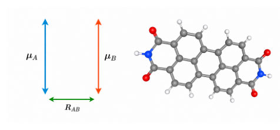
<figcaption class="paper-figure-caption"><b>Fig 1.</b> Fig. 1: Schematic illustration of a molecular dimer system. The transition dipole moments µA and µB are oriented along parallel directions, while RAB denotes the intermolecular separation vector. On the right, the corresponding molecular structure is represented using a ball-and-stick model.</figcaption>
</figure>
<figure class="paper-figure-card">
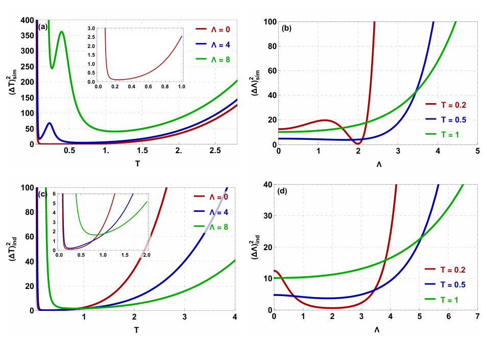
<figcaption class="paper-figure-caption"><b>Fig 2.</b> Fig. 2: Estimation variances associated with temperature T and detuning Λ for simultaneous and individual estimation strategies. The upper row corresponds to simultaneous estimation, while the lower row refers to individual estimation. The left column shows (∆T)2 as a function of temperature for different values of Λ, and the right column shows (∆Λ)2 as a function of Λ for different temperatures. Results are obtained for ν0 = 1 and VAB = 0.1.</figcaption>
</figure>
<figure class="paper-figure-card">
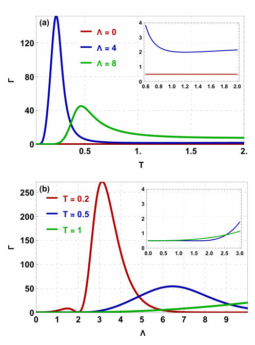
<figcaption class="paper-figure-caption"><b>Fig 3.</b> Fig. 3: Plot of the ratio Γ of minimal total variances for the estimation of T and Λ. (a) Γ as a function of T for different values of Λ. (b) Γ as a function of Λ for different temperatures. The other parameters are fixed at ν0 = 1 and VAB = 0.1.</figcaption>
</figure>
</div>

<p><strong>Summary.</strong> This paper analyzes multiparameter quantum estimation in a model of interacting molecular dimers. By calculating the Quantum Fisher Information Matrix, the authors show that simultaneous estimation is superior when the system is near resonance and at low temperatures. The results establish temperature as a key control parameter for achieving high-precision quantum sensing.</p>
<p><strong>Why it may be interesting.</strong> This work directly addresses quantum sensing in realistic molecular platforms, providing quantitative metrics (QFIM) to guide experimental design for enhancing measurement precision beyond classical limits.</p>
<details>
<summary>Detailed structure</summary>
<p><strong>Main problem.</strong> The study investigates the fundamental limits of simultaneously estimating multiple parameters, specifically temperature (T) and detuning ($\Lambda$), in a molecular dimer system.</p>
<p><strong>Main result.</strong> Simultaneous estimation outperforms individual estimations when quantum coherence is high (low T and near resonance), demonstrating that temperature acts as a critical control parameter for metrology precision.</p>
<p><strong>Method.</strong> The analysis employs the Quantum Fisher Information Matrix (QFIM) derived via a vectorization approach to calculate the ultimate precision bounds (Quantum Cramér–Rao bound).</p>
<p><strong>Model / system.</strong> The physical system is a molecular dimer modeled by two dipole-dipole interacting two-level systems. The dynamics are governed by a Hamiltonian incorporating detuning and interaction strength.</p>
<p><strong>Key observables.</strong> Quantum Fisher Information Matrix elements ($K_{\mu
u}$), estimation variances ($\Delta T, \Delta \Lambda$), and the performance ratio $\Gamma(T, \Lambda)$.</p>
<p><strong>Important parameters / regimes.</strong> Temperature (T), Detuning ($\Lambda$), Dipole-dipole interaction strength ($V_{AB}$), and the near-resonant/low-temperature regime.</p>
<p><strong>Assumptions / limitations.</strong> The system is assumed to reach global thermal equilibrium ($\varrho_{th}$ state) and utilizes an approximation for coherent excitonic interactions.</p>
<p><strong>Figures summary.</strong> Figures illustrate the comparison of simultaneous vs. individual estimation variances across T and $\Lambda$, showing the advantage ratio $\Gamma < 1$ near resonance and low temperature.</p>
<p><strong>Paper structure.</strong> The paper introduces the physical model, derives the QFIM using vectorization, compares the bounds for simultaneous versus individual parameter estimation, and concludes by mapping out the optimal operating regime governed by T and $\Lambda$.</p>
</details>
<details>
<summary>Abstract</summary>
<p>We investigate multiparameter quantum estimation in a molecular dimer composed of two dipole--dipole interacting two-level systems, focusing on the simultaneous estimation of temperature $T$ and detuning $Λ$. By employing a vectorization approach to derive the quantum Fisher information matrix, we analyze the precision limits of both simultaneous and individual estimation strategies. We show that simultaneous estimation outperforms the individual one in the near-resonant and low-temperature regime, where quantum coherence is enhanced, while its advantage is progressively reduced under detuned conditions and increasing temperature. Our results demonstrate that temperature acts as a key control parameter governing both estimation precision providing a unified perspective on quantum metrology. These findings highlight the potential of molecular quantum systems as realistic platforms for multiparameter quantum sensing.</p>
</details>
<p><sub><a href="#top">↑ back to top</a></sub></p>

<p><a id="paper-2607.10227"></a></p>
<h3 id="code-space-recovery-for-sample-based-quantum-diagonalization-beyond-native-symmetry-constraints"><a href="http://arxiv.org/abs/2607.10227v1">Code-space recovery for sample-based quantum diagonalization beyond native symmetry constraints</a></h3>
<p><strong>Authors:</strong> Byeongyong Park, Sanha Kang, Doyeol Ahn, Keunhong Jeong<br>
<strong>Type:</strong> theory · <strong>Category:</strong> quantum information and computing · <strong>PDF:</strong> <a href="https://arxiv.org/pdf/2607.10227v1">https://arxiv.org/pdf/2607.10227v1</a><br>
<strong>Analysis basis:</strong> full PDF text, analyzed in chunks
<strong>Topic relevance:</strong> <code>analog quantum simulation</code> <strong>2/5</strong> · <code>methods for driven-dissipative</code> <strong>1/5</strong> · <code>quantum measurements</code> <strong>1/5</strong></p>
<div class="figure-strip-hint">↔ Scroll figures horizontally</div>
<div class="paper-figures-scroll">
<figure class="paper-figure-card">
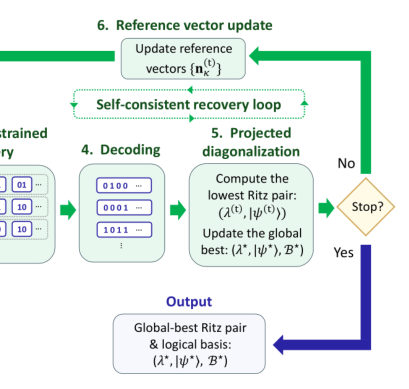
<figcaption class="paper-figure-caption"><b>Fig 1.</b> Fig. 1 SQD workflow combining dual-rail encoding with self-consistent code-space recovery. The objective of this workflow is to estimate the lowest Ritz pair of a target Hermitian operator O. (1) Each logical qubit is encoded as |0⟩7→|01⟩and |1⟩7→|10⟩, and each logical operator A used in the sampling circuits is mapped to an encoded operator A′ satisfying A′V = V A, where V is the encoding isometry. The encoding constrains every physical qubit pair to have Hamming weight one, making code-space violations detectable and providing structural information for subsequent recovery. (2) After the encoded quantum circuits are executed to generate measurement samples, each physical qubit pair is...</figcaption>
</figure>
<figure class="paper-figure-card">
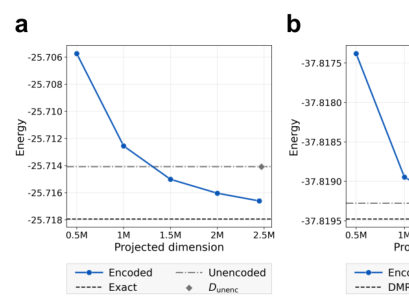
<figcaption class="paper-figure-caption"><b>Fig 2.</b> Fig. 2 Lowest projected Ritz energies for the 25-spin-site benchmarks. Energies are shown as a function of projected dimension for (a) 1D TFIM, (b) 1D MFIM, and (c) 5 × 5 2D TFIM. Encoded denotes projected diagonalization in a recovered logical basis obtained by applying code-space recovery to encoded hardware samples. Unencoded denotes the direct projected diagonalization baseline using the logical sample- support basis obtained from unencoded hardware samples. Black dashed lines indicate exact or DMRG reference energies, gray dash-dotted lines indicate direct unencoded baseline energies, and gray diamonds mark Dunenc, the dimension of the unencoded sample-support basis.</figcaption>
</figure>
<figure class="paper-figure-card">
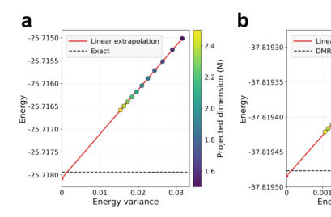
<figcaption class="paper-figure-caption"><b>Fig 3.</b> Fig. 3 Energy-variance extrapolation for 25-spin-site recovered states. Projected Ritz energy is plotted against energy variance for states obtained from recovered bases constructed by code-space recovery on encoded hardware samples. Results are shown for (a) 1D TFIM, (b) 1D MFIM, and (c) 5 × 5 2D TFIM. Each point denotes one projected Ritz state, and the color indicates the realized projected dimension. Red lines denote linear fits to all displayed energy-variance sweep points from Dtar = 1.5 × 106 to 2.5 × 106, and dashed horizontal lines indicate the exact reference energy for 1D TFIM and DMRG reference energies for 1D MFIM and 2D TFIM.</figcaption>
</figure>
<figure class="paper-figure-card">
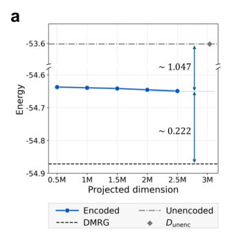
<figcaption class="paper-figure-caption"><b>Fig 4.</b> Fig. 4 Stress tests on 36-spin-site benchmarks. Lowest projected Ritz energies are shown as a function of projected dimension for (a) 1D MFIM 36-site and (b) 6×6 2D TFIM 36-site. Encoded denotes projected diag- onalization in the recovered logical basis constructed from encoded hardware samples by code-space recovery. Unencoded denotes the direct projected diagonalization baseline using the logical sample-support basis obtained from unencoded hardware samples. Black dashed lines indicate DMRG reference energies, gray dash-dotted lines indicate direct unencoded baseline energies, and gray diamonds mark the unencoded sample-support dimen- sions. Blue arrows indicate the baseline-to-encoded...</figcaption>
</figure>
</div>

<p><strong>Summary.</strong> The paper presents code-space recovery as an advanced technique to enhance Sample-based Quantum Diagonalization (SQD) for finding ground states of general quantum Hamiltonians. By employing a dual-rail encoding, the method engineers robustness against sampling errors, allowing accurate diagonalization even when natural symmetries are absent. This significantly extends the applicability and reliability of quantum simulation algorithms.</p>
<p><strong>Why it may be interesting.</strong> This work directly addresses limitations in applying quantum simulation techniques to complex Hamiltonians by providing a robust error mitigation strategy that moves beyond relying solely on inherent physical symmetries.</p>
<details>
<summary>Detailed structure</summary>
<p><strong>Main problem.</strong> To improve Sample-based Quantum Diagonalization (SQD) for finding ground states of Hamiltonians when native symmetries are not guaranteed.</p>
<p><strong>Main result.</strong> Code-space recovery, which engineers structure via dual-rail encoding and self-consistent repair, yields lower projected Ritz energies than unencoded methods even with increased circuit overhead.</p>
<p><strong>Method.</strong> The authors introduce code-space recovery using a dual-rail representation to encode logical qubits into physical pairs. This allows for the detection and iterative repair of sampling errors (code-space violations) during the diagonalization process.</p>
<p><strong>Model / system.</strong> The method is benchmarked on Ising-type spin Hamiltonians, specifically Transverse-Field and Mixed-Field Ising Models, up to 36 spin sites. The target operator $O$ is set to the Hamiltonian itself.</p>
<p><strong>Key observables.</strong> Projected Ritz energies (estimating ground state energy), detection/repair of code-space violations, and comparison against classical reference energies from DMRG calculations.</p>
<p><strong>Important parameters / regimes.</strong> The encoding doubles the qubit count; recovery involves iterative steps ($N_{I,max}$); benchmarks test varying projected basis dimensions ($D_{	ext{tar}}$).</p>
<p><strong>Assumptions / limitations.</strong> The method assumes that engineered recoverable structure can compensate for the increased circuit overhead associated with the dual-rail encoding.</p>
<p><strong>Figures summary.</strong> Figure 1 summarizes the workflow: combining dual-rail encoding with self-consistent code-space recovery to estimate the lowest Ritz pair of $O$.</p>
<p><strong>Paper structure.</strong> The paper introduces the problem, details the dual-rail encoding and the iterative, self-consistent code-space recovery algorithm (including clustering and stochastic repair), benchmarks this against unencoded methods on various Ising models, and validates results using classical reference energies.</p>
</details>
<details>
<summary>Abstract</summary>
<p>Sample-based quantum diagonalization (SQD) diagonalizes a Hamiltonian in a compact subspace built from quantum samples, and its performance often relies on recovery procedures that exploit native constraints such as particle-number symmetry. For a broad class of eigenvalue problems, however, no analogous constraint is guaranteed, limiting the applicability of SQD-type recovery. Here, we introduce code-space recovery, which engineers recoverable structure through encoding rather than assuming it in the target problem. Using a dual-rail representation, each logical qubit is mapped to a physical pair, $|0\rangle \to |01\rangle$ and $|1\rangle \to |10\rangle$, making code-space violations in noisy samples detectable and repairable. We combine this encoding with self-consistent recovery and benchmark it on transverse- and mixed-field Ising models with up to 36 spin sites. Despite increased circuit overhead, code-space recovery yields lower projected Ritz energies than unencoded sample-support diagonalization even at smaller projected-basis dimensions, suggesting that engineered recoverable structure can extend SQD beyond native constraints.</p>
</details>
<p><sub><a href="#top">↑ back to top</a></sub></p>

<p><a id="paper-2607.11679"></a></p>
<h3 id="electronic-tuning-of-the-soft-phonon-transport-anomaly-in-tamath957mathnismath958mathsemath959mathmath960math"><a href="http://arxiv.org/abs/2607.11679v1">Electronic tuning of the soft-phonon transport anomaly in Ta$_2$Ni(S$_x$Se$_{1-x}$)$_5$</a></h3>
<p><strong>Authors:</strong> Yuan-Shan Zhang, Masahiko Isobe, Hidenori Takagi, Dennis Huang<br>
<strong>Type:</strong> both · <strong>Category:</strong> strongly correlated electrons · <strong>PDF:</strong> <a href="https://arxiv.org/pdf/2607.11679v1">https://arxiv.org/pdf/2607.11679v1</a><br>
<strong>Analysis basis:</strong> full PDF text, analyzed in chunks
<strong>Topic relevance:</strong> <code>driven-dissipative phase transition</code> <strong>2/5</strong> · <code>Frenkel-Kontorova</code> <strong>1/5</strong> · <code>non-equilibrium dynamics</code> <strong>1/5</strong></p>
<div class="figure-strip-hint">↔ Scroll figures horizontally</div>
<div class="paper-figures-scroll">
<figure class="paper-figure-card">
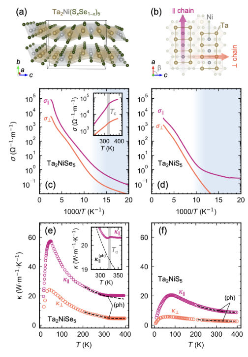
<figcaption class="paper-figure-caption"><b>Fig 1.</b> FIG. 1. (a) Crystal structure of Ta2Ni(SxSe1−x)5 with unit cell shown. (b) View along b axis with Ta/Ni chains em- phasized. (c), (d) Electrical conductivity σ of Ta2NiSe5 and Ta2NiS5 plotted on a logarithmic scale against the inverse temperature 1000/T. The directions parallel (∥; along a) and perpendicular (⊥; along c) to the chains are shown in (b). The blue shading marks an extrinsic regime dominated by impurity-band conduction. The inset of (c) plots σ vs. T near the transition temperature Tc of Ta2NiSe5. (e), (f) Thermal conductivity κ of Ta2NiSe5 and Ta2NiS5 vs. T. The dashed black curves represent the estimated phonon (ph) contribu- tions. The inset of (e) is an enlargement of κ∥and...</figcaption>
</figure>
<figure class="paper-figure-card">
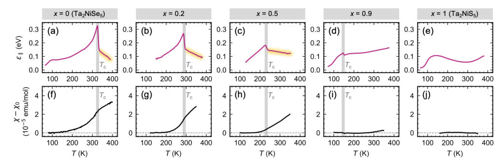
<figcaption class="paper-figure-caption"><b>Fig 2.</b> FIG. 2. Signatures of electronic gap opening revealed by a combination of intrachain electrical transport and magnetic sus- ceptibility. (a)–(e) Logarithmic derivative of the intrachain electrical conductivity, ϵ∥= kBT 2d(ln σ∥)/dT, of Ta2Ni(SxSe1−x)5 samples with x = 0, 0.2, 0.5, 0.9, and 1. The vertical gray lines mark Tc. The yellow shading in (a)–(c) marks regions of possible gap fluctuations. (f)–(j) Magnetic susceptibility χ −χ0 vs. T, where χ0 is a constant offset subtracted from the data. The data in (a) are replotted from Ref. [10].</figcaption>
</figure>
<figure class="paper-figure-card">
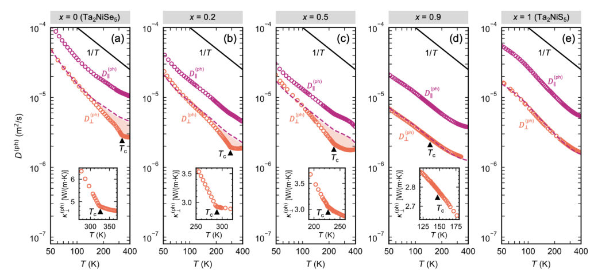
<figcaption class="paper-figure-caption"><b>Fig 3.</b> FIG. 3. Signature of soft-phonon anomaly revealed by interchain thermal transport. (a)–(e) Phonon diffusivity D(ph) = κ(ph)/C(ph) for Ta2Ni(SxSe1−x)5 samples with x = 0, 0.2, 0.5, 0.9, and 1. The dashed fuchsia curves are D(ph) ∥ scaled by a</figcaption>
</figure>
<figure class="paper-figure-card">
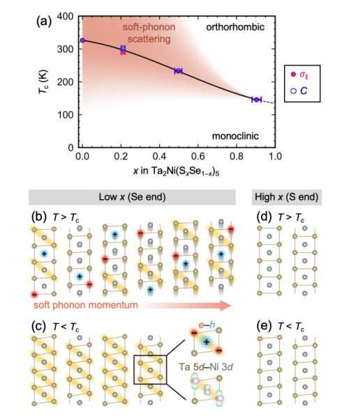
<figcaption class="paper-figure-caption"><b>Fig 4.</b> FIG. 4. (a) Phase diagram of Ta2Ni(SxSe1−x)5. The filled fuchsia and open blue circles are Tc values derived from the intrachain electrical conductivity and heat capacity, respec- tively. The orange shading marks the region of enhanced phonon-phonon scattering in the interchain direction. (b), (c) Schematic of Ta/Ni chains above and below Tc, respectively, near the Se end. The faint yellow bars represent electronic interactions between the Ta and Ni sites, which could be the pairing of electrons and holes, or the hybridization of Ta 5d and Ni 3d orbitals [illustrated in (c)]. The monoclinic distor- tion is exaggerated for clarity. (d), (e) Schematic of Ta/Ni chains above and below Tc,...</figcaption>
</figure>
</div>

<p><strong>Summary.</strong> This research investigates the phase transitions in Ta2Ni(S_xSe_{1-x})_5 by linking anomalous phonon transport to electronic instabilities. The authors demonstrate that the soft-phonon anomaly is not isolated but arises from a complex interplay involving excitonic, hybridization, and lattice fluctuations. This suggests that multiple correlated mechanisms must act together to stabilize the material's high critical temperature.</p>
<p><strong>Why it may be interesting.</strong> The work provides an excellent case study for understanding how lattice dynamics (phonons) are intimately coupled to electronic correlations and gap formation, a central theme in strongly correlated electron physics.</p>
<details>
<summary>Detailed structure</summary>
<p><strong>Main problem.</strong> To clarify the microscopic origin and significance of a 'soft-phonon transport anomaly' observed at a phase transition in Ta2Ni(S_xSe_{1-x})_5, and to establish the interplay between electronic instabilities and lattice dynamics.</p>
<p><strong>Main result.</strong> The soft-phonon anomaly is strongly coupled to underlying electronic instabilities, suggesting that three types of interactions—excitonic, hybridization-gap, and intrinsic lattice instability—must coexist to explain the high transition temperature ($T_c$).</p>
<p><strong>Method.</strong> The study combines experimental measurements (thermal/electrical transport, heat capacity) with theoretical analysis comparing multiple competing instability mechanisms.</p>
<p><strong>Model / system.</strong> The physical system is the quasi-one-dimensional chalcogenide solid solution Ta2Ni(S_xSe_{1-x})_5. The investigation probes how tuning stoichiometry ($x$) modifies the interplay between electronic gaps and lattice softening.</p>
<p><strong>Key observables.</strong> Soft-phonon transport anomaly (anisotropic phonon scattering), electrical conductivity ($\sigma$), thermal conductivity ($\kappa$), and the logarithmic derivative of conductivity ($\epsilon_{\parallel}$).</p>
<p><strong>Important parameters / regimes.</strong> $T_c$ (ranging from $\sim 130 	ext{ K}$ to $326 	ext{ K}$), stoichiometry $x$, and electronic gap energies.</p>
<p><strong>Assumptions / limitations.</strong> The analysis assumes that the observed anomalies are due to strong electron-phonon coupling, requiring consideration of excitonic, single-particle hybridization, and lattice instabilities simultaneously.</p>
<p><strong>Figures summary.</strong> Figures show signatures of electronic gaps in $\epsilon_{\parallel}$ and magnetic susceptibility ($\chi$), alongside V-shaped suppression anomalies in perpendicular phonon diffusivity ($D^{(	ext{ph})}_{\perp}$) centered at $T_c$.</p>
<p><strong>Paper structure.</strong> The paper systematically analyzes transport measurements across the composition gradient, correlating the vanishing of the soft-phonon anomaly with the approach to a band insulator state. It culminates by proposing that only the simultaneous action of multiple instabilities can explain the high $T_c$ observed in $  ext{Ta}_2   ext{NiSe}_5$.</p>
</details>
<details>
<summary>Abstract</summary>
<p>Ta$_2$NiSe$_5$ continues to be investigated for its phase transition at $T_\textrm{c}$ = 326 K, where it develops both an electronic gap and a distortion of its Ta/Ni chains. One intriguing feature at $T_\textrm{c}$ seen in thermal transport is the giant anisotropic scattering of phonons moving perpendicular to the chains, which is apparently associated with the softening of a transverse acoustic phonon, but whose microscopic origin and significance demand clarification. By tuning the normal-state band overlap/gap with S substitution, we uncover a close connection between this soft-phonon transport anomaly and underlying electronic instabilities: When Ta$_2$Ni(S$_x$Se$_{1-x}$)$_5$ approaches a band insulator at high $x$, and signatures of the electronic transition are suppressed, the soft-phonon transport anomaly concomitantly vanishes. Our results establish the following picture for the Ta$_2$Ni(S$_x$Se$_{1-x}$)$_5$ family: Near the S end, a sole lattice instability gives rise to a weak structural transition with $T_\textrm{c}$ approaching 130 K. Near the Se end, additional electronic instabilities boost $T_\textrm{c}$ up to 326 K and amplify experimental signatures of the transition. The strong interaction between electrons, holes, and the lattice is manifested as a soft-phonon transport anomaly accompanied by electronic fluctuations, which include excitonic and hybridization-gap fluctuations.</p>
</details>
<p><sub><a href="#top">↑ back to top</a></sub></p>

<p><a id="paper-2607.10076"></a></p>
<h3 id="geometric-universality-and-thermodynamic-microstructure-of-real-fluids-in-a-unified-entropic-framework"><a href="http://arxiv.org/abs/2607.10076v1">Geometric Universality and Thermodynamic Microstructure of Real Fluids in a Unified Entropic Framework</a></h3>
<p><strong>Authors:</strong> Carlos E. Romero-Figueroa, Jose Miguel Ladino, Sasha A. Zaldivar, Hernando Quevedo<br>
<strong>Type:</strong> theory · <strong>Category:</strong> statistical mechanics · <strong>PDF:</strong> <a href="https://arxiv.org/pdf/2607.10076v1">https://arxiv.org/pdf/2607.10076v1</a><br>
<strong>Analysis basis:</strong> full PDF text, analyzed in chunks
<strong>Topic relevance:</strong> <code>non-equilibrium universality</code> <strong>2/5</strong> · <code>driven-dissipative phase transition</code> <strong>1/5</strong> · <code>non-equilibrium dynamics</code> <strong>1/5</strong></p>
<div class="figure-strip-hint">↔ Scroll figures horizontally</div>
<div class="paper-figures-scroll">
<figure class="paper-figure-card">
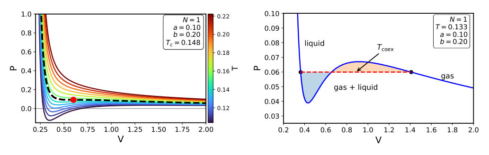
<figcaption class="paper-figure-caption"><b>Fig 1.</b> Fig. 1. (a) P–V isotherms of the vdW model for fixed values of N, a, and b, illustrating the evolution of the EoS with temperature T. (b) Maxwell equal-area construction applied to the oscillatory region of the vdW isotherm, replacing the mechanically unstable branch with the coexistence line corresponding to the first-order phase transition.</figcaption>
</figure>
<figure class="paper-figure-card">
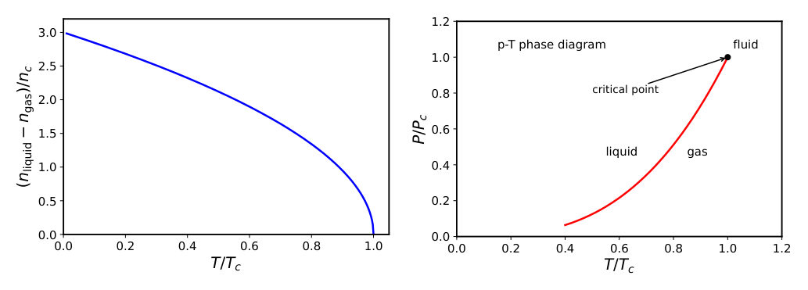
<figcaption class="paper-figure-caption"><b>Fig 2.</b> Fig. 2. (a) Order parameter as a function of T/Tc for the vdW fluid. (b) Phase diagram in the reduced (P/Pc, T/Tc) plane.</figcaption>
</figure>
<figure class="paper-figure-card">
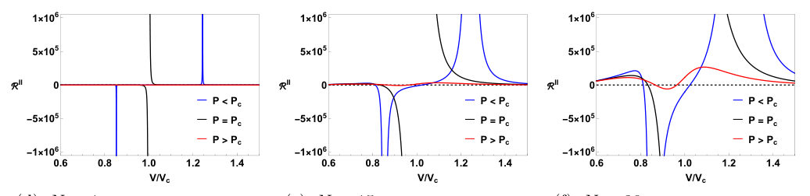
<figcaption class="paper-figure-caption"><b>Fig 3.</b> Fig. 3. GTD scalar curvature RII versus reduced volume V/Vc for the vdW model under different isobaric regimes relative to Pc (kB = 1, S0 = 0). Panels (a)–(c) show the effect of a and b at fixed N = 10, while (d)–(f) illustrate the dependence on N for a = b = 15. The curvature is normalized as RII →RIIS3U 2.</figcaption>
</figure>
<figure class="paper-figure-card">
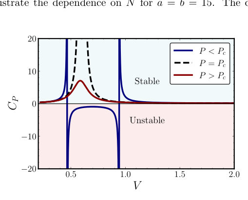
<figcaption class="paper-figure-caption"><b>Fig 4.</b> Fig. 4. (a) Heat capacity CP of the vdW model as a function of the volume V for P &lt; Pc, P = Pc, and P &gt; Pc, with fixed parameters a = 0.1, b = 0.2, and N = kB = 1. The heat capacity exhibits the same divergence structure as the scalar curvature, with singularities occurring at the corresponding phase transition points.</figcaption>
</figure>
<figure class="paper-figure-card">
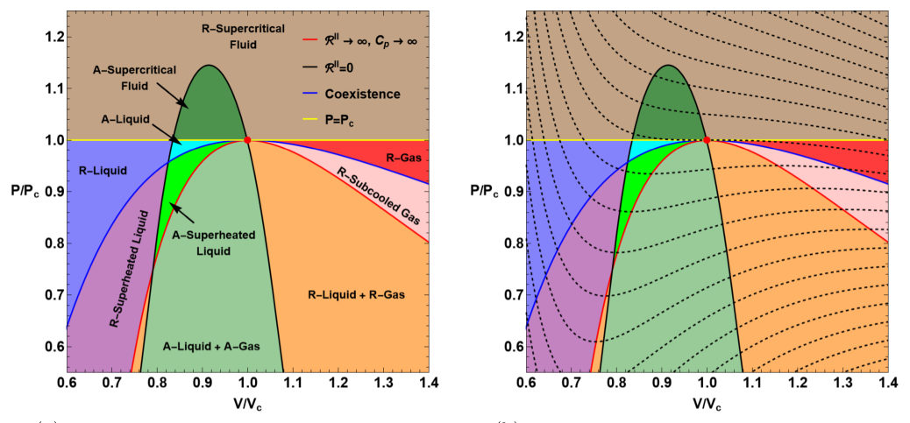
<figcaption class="paper-figure-caption"><b>Fig 5.</b> Fig. 5. Microscopic phase diagrams of the vdW model. Stability and metastability regions are shown, with attractive (A−) and repulsive (R−) interactions determined by the sign of RII. The binodal (blue), spinodal (red), and zero-curvature (black) curves are displayed; the red dot marks the critical point (kB = 1, S0 = 0, a = b = 20, N = 5). Panel (a) labels the phases, while (b) shows isotherms for T ∈[0.8Tc, 1.1Tc].</figcaption>
</figure>
</div>

<p><strong>Summary.</strong> This paper unifies several equations of state for real fluids within a novel geometric framework called Geometrothermodynamics (GTD). By analyzing the curvature of the thermodynamic manifold, the authors show that macroscopic phenomena like critical points are encoded geometrically. This provides a powerful, universal tool for classifying and understanding fluid behavior based on fundamental mathematical invariants.</p>
<p><strong>Why it may be interesting.</strong> While focused on classical fluids, the use of advanced geometric tools like GTD to classify universal scaling behaviors is highly relevant for understanding phase transitions in quantum many-body systems where geometry often dictates critical points.</p>
<details>
<summary>Detailed structure</summary>
<p><strong>Main problem.</strong> To develop a unified entropic framework for real fluids that encompasses multiple existing Equations of State (EoS) within a common thermodynamic description.</p>
<p><strong>Main result.</strong> The authors show that the geometric structure, quantified by scalar curvature ($\mathcal{R}$), successfully encodes macroscopic critical phenomena and universal scaling features across different fluid models.</p>
<p><strong>Method.</strong> The study employs Geometrothermodynamics (GTD), mapping the thermodynamic equilibrium space onto a Riemannian manifold whose geometry is analyzed using concepts like scalar curvature and invariant ratios.</p>
<p><strong>Model / system.</strong> The system under study is real fluids, modeled by various EoS such as van der Waals, Berthelot, Redlich-Kwong, and Peng-Robinson. The analysis extends the framework to examine general thermodynamic systems.</p>
<p><strong>Key observables.</strong> Scalar curvature ($\mathcal{R}$), dimensionless critical-amplitude ratios ($Q^i_{j}$), zero-curvature curves, and critical parameters ($V_c, T_c, P_c$).</p>
<p><strong>Important parameters / regimes.</strong> Intermolecular attraction/repulsion strengths, system size (for scaling analysis), and the generalized thermodynamic potential.</p>
<p><strong>Assumptions / limitations.</strong> The model relies on a mean-field approximation for intermolecular potentials and assumes thermodynamic consistency can be captured by geometric invariants.</p>
<p><strong>Figures summary.</strong> Figure 1 illustrates P–V isotherms for the van der Waals model, demonstrating the Maxwell equal-area construction for first-order phase transitions.</p>
<p><strong>Paper structure.</strong> The paper systematically derives generalized EoS forms, maps them onto a GTD manifold structure, calculates critical parameters using geometric invariants (curvature), and concludes by statistically reconstructing zero-curvature curves using MCMC methods.</p>
</details>
<details>
<summary>Abstract</summary>
<p>We introduce a unified entropic framework for real fluids that encompasses the van der Waals, Berthelot, Redlich Kwong, and Peng Robinson equations of state within a common thermodynamic description. The corresponding microscopic interactions are then explored using Geometrothermodynamics, GTD, through the scalar curvature $mathcal{R}$ of the equilibrium manifold. We show that curvature singularities accurately reproduce macroscopic critical phenomena, while vanishing curvature $\mathcal{R}=0$ identifies specific thermodynamic states where attractive and repulsive intermolecular forces effectively balance. Furthermore, we introduce a set of dimensionless critical-amplitude ratios $Q^i_{j}$, which reveal universal geometric features of the critical regime. Although individual critical amplitudes exhibit a logarithmic dependence on the system size, these invariant ratios organize different molecular species according to the strength of criticality and encode universal scaling features, suggesting their potential as robust classification parameters. Finally, employing Bayesian inference and Markov Chain Monte Carlo, MCMC methods, we statistically reconstruct the zero-curvature curves. The posterior distributions support the consistency of the geometric scaling behavior, demonstrating that the GTD manifold encodes non-trivial information about the underlying thermodynamical models.</p>
</details>
<p><sub><a href="#top">↑ back to top</a></sub></p>

<p><a id="paper-2607.10707"></a></p>
<h3 id="mdqec-qas-meta-decoding-for-quantum-error-correction-with-hardware-aware-vqc-search-and-confidence-gated-recovery"><a href="http://arxiv.org/abs/2607.10707v1">MDQEC-QAS: Meta-Decoding for Quantum Error Correction with Hardware-Aware VQC Search and Confidence-Gated Recovery</a></h3>
<p><strong>Authors:</strong> Prashant Kumar Choudhary, Nouhaila Innan, Muhammad Shafique, Rajeev Singh<br>
<strong>Type:</strong> theory · <strong>Category:</strong> quantum information and computing · <strong>PDF:</strong> <a href="https://arxiv.org/pdf/2607.10707v1">https://arxiv.org/pdf/2607.10707v1</a><br>
<strong>Analysis basis:</strong> full PDF text, analyzed in chunks
<strong>Topic relevance:</strong> <code>QC/QI experiment</code> <strong>2/5</strong> · <code>methods for driven-dissipative</code> <strong>1/5</strong> · <code>quantum measurements</code> <strong>1/5</strong></p>
<div class="figure-strip-hint">↔ Scroll figures horizontally</div>
<div class="paper-figures-scroll">
<figure class="paper-figure-card">
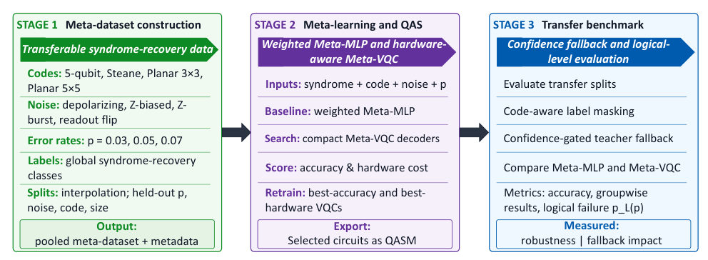
<figcaption class="paper-figure-caption"><b>Fig 1.</b> Figure 1. Overview of the learned-assisted meta-decoding framework. Syndrome-recovery data are generated using code-appropriate teacher decoders, pooled into a global label space, used to train classical and VQC meta-decoders, and evaluated using teacher-label accuracy, confidence-gated fallback, and logical-failure analysis.</figcaption>
</figure>
<figure class="paper-figure-card">
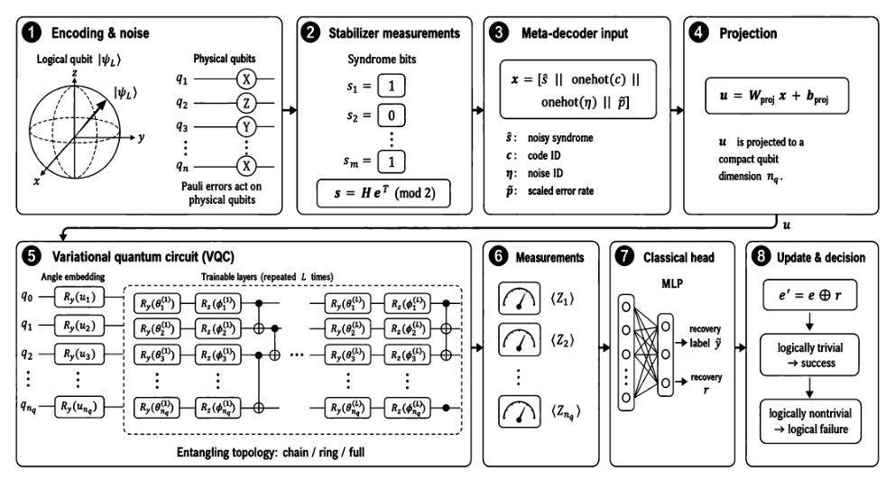
<figcaption class="paper-figure-caption"><b>Fig 2.</b> Figure 2. Qubit-level mechanism of learned-assisted QEC meta-decoding. A logical qubit |𝜓𝐿⟩is encoded into physical qubits, where Pauli errors generate stabilizer syndromes according to 𝑠= 𝐻𝑒𝑇(mod 2). The syndrome, code identity, noise identity, and normalized physical error rate are combined into the meta-feature vector 𝑥= [˜𝑠∥onehot(𝑐)∥onehot(𝜂)∥˜𝑝] and projected to a compact VQC input. The VQC applies angle embedding, trainable rotation layers, and entangling operations, after which Pauli-𝑍measurements are mapped by a classical head to a recovery label and recovery operator 𝑟. Decoding success is determined by whether the corrected operator 𝑒′ = 𝑒⊕𝑟is logically trivial or logically...</figcaption>
</figure>
<figure class="paper-figure-card">
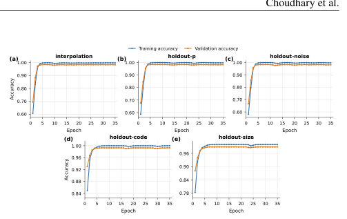
<figcaption class="paper-figure-caption"><b>Fig 3.</b> Figure 3. Training and validation accuracy of the Meta-MLP on the pooled multi-code, multi-noise dataset.</figcaption>
</figure>
<figure class="paper-figure-card">
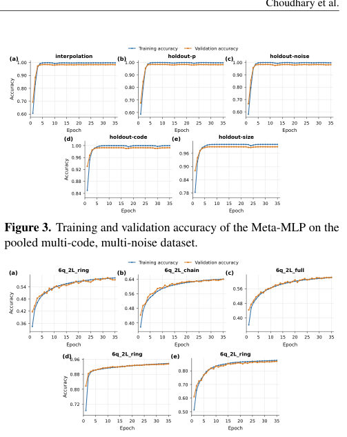
<figcaption class="paper-figure-caption"><b>Fig 4.</b> Figure 4. Retraining curves of the two selected VQC meta-decoders. Panels (a)–(e) correspond to interpolation, unseen-𝑝transfer, unseen- noise transfer, few-shot unseen-code adaptation, and few-shot held- out-size adaptation, respectively.</figcaption>
</figure>
<figure class="paper-figure-card">
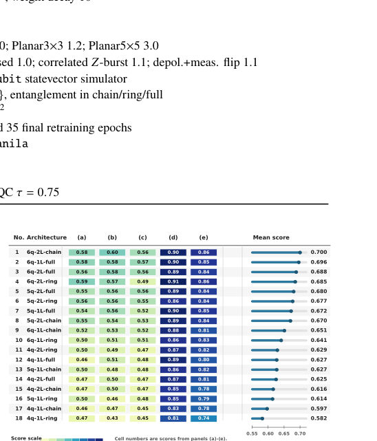
<figcaption class="paper-figure-caption"><b>Fig 5.</b> Figure 6. Hardware-aware score of candidate VQC architectures. The score combines predictive performance with implementation- oriented circuit-cost proxies such as depth and two-qubit gate count.</figcaption>
</figure>
</div>

<p><strong>Summary.</strong> This work introduces a meta-decoding framework to create universal decoders for Quantum Error Correction, capable of adapting across various codes and noise types. By integrating hardware-aware VQCs and implementing a confidence-gated fallback mechanism, the authors show that selective recovery based on model certainty is vital for achieving robust logical performance.</p>
<p><strong>Why it may be interesting.</strong> It directly addresses the gap between machine learning performance metrics (accuracy) and physical system reliability (logical error rate), which is crucial for building fault-tolerant quantum computers.</p>
<details>
<summary>Detailed structure</summary>
<p><strong>Main problem.</strong> Developing a robust quantum error correction (QEC) decoder that can adapt across diverse physical conditions, including multiple stabilizer codes, noise families, and varying error rates.</p>
<p><strong>Main result.</strong> A confidence-gated hybrid recovery strategy significantly improves logical performance by selectively using learned decoders only when they are highly confident, outperforming methods relying solely on high classification accuracy.</p>
<p><strong>Method.</strong> The authors propose a unified meta-decoding framework that trains a single model to map syndromes to recoveries across various codes and noise settings. This is augmented with hardware-aware Variational Quantum Circuits (VQC) and a confidence-gated fallback mechanism.</p>
<p><strong>Model / system.</strong> The study analyzes QEC performance using several stabilizer codes (FiveQubit, Steane, Planar3x3, Planar5x5). The core model involves training meta-decoders on syndrome measurements derived from noisy physical qubits.</p>
<p><strong>Key observables.</strong> Logical failure probability ($p_L(p)$) and raw logical-failure ratios relative to the teacher decoder are key diagnostics, rather than just classification accuracy.</p>
<p><strong>Important parameters / regimes.</strong> The benchmark tests five evaluation regimes: interpolation, unseen-$p$ transfer, unseen-noise transfer, few-shot unseen-code adaptation, and few-shot held-out-size adaptation.</p>
<p><strong>Assumptions / limitations.</strong> High teacher-label accuracy alone is insufficient for assessing true logical performance in complex topological codes; therefore, a confidence threshold ($  au$) is necessary to gate the learned recovery.</p>
<p><strong>Figures summary.</strong> Figure 12 specifically shows Planar $5	imes 5$ logical-failure curves comparing different protocols under the confidence-gated hybrid recovery protocol across five adaptation scenarios.</p>
<p><strong>Paper structure.</strong> The paper introduces the meta-decoding framework, details the comparison between Meta-MLP and hardware-aware VQC decoders, rigorously tests generalization across multiple transfer regimes, and culminates in a detailed analysis of logical failure rates using confidence gating.</p>
</details>
<details>
<summary>Abstract</summary>
<p>We propose a unified meta-decoding framework for quantum error correction that learns syndrome-to-recovery mappings across multiple stabilizer codes and noise settings, without requiring separate decoders for each configuration. The benchmark includes FiveQubit, Steane, Planar3x3, and Planar5x5 codes, four noise families, and five evaluation regimes: interpolation, unseen-p transfer, unseen-noise transfer, few-shot unseen-code adaptation, and few-shot held-out-size adaptation. We compare a classical Meta-MLP teacher-trained baseline with variational quantum circuit (VQC) meta-decoders selected through hardware-aware quantum architecture search over qubit count, circuit depth, and entangling topology. The Meta-MLP achieves teacher-label accuracies of 0.9993, 0.9118, 0.9342, 0.6304, and 0.7548 across the five regimes, while the hardware-aware VQC achieves 0.9400, 0.8495, 0.8415, 0.5678, and 0.7143. However, logical-level evaluation shows that high teacher-label accuracy alone is insufficient in the most challenging Planar5x5 setting. During interpolation, the raw logical-failure ratios relative to the teacher are 12.08 and 25.91 for the Meta-MLP and VQC, respectively, whereas confidence-gated fallback reduces them to 1.71 and 1.11. These results support confidence-aware selective recovery rather than unconditional teacher replacement.</p>
</details>
<p><sub><a href="#top">↑ back to top</a></sub></p>

<p><a id="paper-2607.11847"></a></p>
<h3 id="optimal-tomography-of-bosonic-and-fermionic-gaussian-states"><a href="http://arxiv.org/abs/2607.11847v1">Optimal tomography of bosonic and fermionic Gaussian states</a></h3>
<p><strong>Authors:</strong> Senrui Chen, Marco Fanizza, Filippo Girardi, Ludovico Lami, Francesco Anna Mele, Michael Walter, Freek Witteveen<br>
<strong>Type:</strong> theory · <strong>Category:</strong> quantum information and computing · <strong>PDF:</strong> <a href="https://arxiv.org/pdf/2607.11847v1">https://arxiv.org/pdf/2607.11847v1</a><br>
<strong>Analysis basis:</strong> full PDF text, analyzed in chunks
<strong>Topic relevance:</strong> <code>entanglement &amp; information structure</code> <strong>2/5</strong> · <code>analog quantum simulation</code> <strong>1/5</strong> · <code>quantum measurements</code> <strong>1/5</strong></p>
<div class="figure-strip-hint">↔ Scroll figures horizontally</div>
<div class="paper-figures-scroll">
<figure class="paper-figure-card">
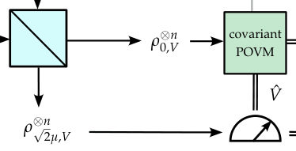
<figcaption class="paper-figure-caption"><b>Fig 1.</b> Figure 1: Scheme of the learning protocol for bosonic Gaussian states. After obtaining zero- mean copies through a beam-splitter, the operations in the green box generate a distribution over covariance-matrix estimates, equivalent to a) measuring a purification with Hayashi measurement b) outputting the covariance matrix of the partial trace of the Hayashi measurement outcome. The estimated covariance matrix can then be used to efficiently estimate the first moment on the remaining copies, via a generaldyne measurement.</figcaption>
</figure>
</div>

<p><strong>Summary.</strong> This paper solves an open problem by determining the optimal sample complexity required to reconstruct unknown bosonic and fermionic Gaussian quantum states. The key finding is that this complexity scales quadratically with the number of modes, $m^2$, which is highly efficient for characterizing these important physical states. It achieves this using advanced mathematical tools like generalized random purification channels.</p>
<p><strong>Why it may be interesting.</strong> This work provides fundamental resource estimates (sample complexity) for characterizing complex quantum states relevant in quantum information processing and quantum simulation using continuous variable systems.</p>
<details>
<summary>Detailed structure</summary>
<p><strong>Main problem.</strong> The primary goal is determining the optimal sample complexity—the minimum number of copies required for quantum state tomography—for bosonic and fermionic Gaussian states.</p>
<p><strong>Main result.</strong> The authors prove that the sample complexity scales quadratically with the number of modes ($m$), specifically $n = \Theta(m^2 / \epsilon^2)$, regardless of whether the state is pure or mixed.</p>
<p><strong>Method.</strong> The analysis employs advanced techniques including representation theory of Gaussian unitaries and generalizing the random purification channel to handle bosonic symmetries.</p>
<p><strong>Model / system.</strong> The focus is on bosonic and fermionic Gaussian quantum states, which are ground or Gibbs states associated with quadratic Hamiltonians. These systems are fundamental in quantum optics and many-body physics.</p>
<p><strong>Key observables.</strong> Sample complexity ($n$), purified distance, trace distance, covariance matrices.</p>
<p><strong>Important parameters / regimes.</strong> Number of modes ($m$), accuracy ($\epsilon$), state purity (pure vs. mixed).</p>
<p><strong>Assumptions / limitations.</strong> For bosonic states in infinite dimensions, the derivation relies on assuming that irreducible representation spaces are finite-dimensional to define a random purification channel.</p>
<p><strong>Figures summary.</strong> A table compares previous best sample complexities with the new results for various Gaussian state types, showing improvements from exponential/cubic scaling to quadratic scaling.</p>
<p><strong>Paper structure.</strong> The paper progresses by first establishing the general problem of sample complexity, then developing generalized tools like random purification channels, and finally applying these tools to derive the optimal $m^2$ scaling law for both bosonic and fermionic Gaussian states.</p>
</details>
<details>
<summary>Abstract</summary>
<p>The sample complexity is the minimum number of copies required to learn an accurate classical description of a quantum state. Bosonic and fermionic Gaussian quantum states are families of quantum states that play a key role in quantum science and technology, from quantum optics and many-body physics to quantum chemistry, quantum computing, and quantum information theory. Despite their importance, their sample complexity had not been fully determined. We settle this open problem and show that both bosonic and fermionic Gaussian states can be learned using a number of copies that scales quadratically in the number of modes, regardless of whether the state is pure or mixed, and independently of any energy bound on the state. We derive these results by using the representation theory of Gaussian unitaries and by putting forth a generalization of the random purification channel to this setting and beyond.</p>
</details>
<p><sub><a href="#top">↑ back to top</a></sub></p>

<p><a id="paper-2607.11532"></a></p>
<h3 id="stripe-ordered-altermagnetism-emerging-from-correlation-driven-spin-density-wave-instability"><a href="http://arxiv.org/abs/2607.11532v1">Stripe-Ordered Altermagnetism Emerging from Correlation-Driven Spin-Density-Wave Instability</a></h3>
<p><strong>Authors:</strong> Zenghui Fan, Jingyao Meng, Tianxing Ma<br>
<strong>Type:</strong> theory · <strong>Category:</strong> strongly correlated electrons · <strong>PDF:</strong> <a href="https://arxiv.org/pdf/2607.11532v1">https://arxiv.org/pdf/2607.11532v1</a><br>
<strong>Analysis basis:</strong> full PDF text, analyzed in chunks
<strong>Topic relevance:</strong> <code>analog quantum simulation</code> <strong>2/5</strong> · <code>Keldysh / 2PI / non-Gaussian methods</code> <strong>1/5</strong> · <code>non-equilibrium dynamics</code> <strong>1/5</strong></p>
<div class="figure-strip-hint">↔ Scroll figures horizontally</div>
<div class="paper-figures-scroll">
<figure class="paper-figure-card">
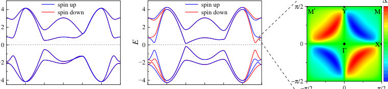
<figcaption class="paper-figure-caption"><b>Fig 1.</b> FIG. 1. Real-space spin-stripe configurations (a) without and (b) with the USEP. Yellow and blue spheres represent spin-up and spin-down electrons, respectively. There is four-site magnetic unit cell (sublattice l = 1, 2, 3, 4 and lattice constant a = 1) with staggered NNN hopping inserted in (a). In (b), filled and open circles denote the charge-rich and hole-rich sites induced by the USEP sketched in the inset. The pure spin stripe in (a) preserves the combined time-reversal (T ) and diagonal-translation (Td) symmetry, while introducing the charge inhomogeneity via USEP in (b) breaks TdT invariance, leaving the system protected by a combined T and mirror (M) symmetry. (c), (d)...</figcaption>
</figure>
<figure class="paper-figure-card">
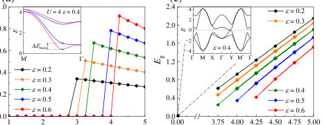
<figcaption class="paper-figure-caption"><b>Fig 2.</b> FIG. 2. (a) Mean-field ground-state phase diagram at half- filling characterized by finite spin-stripe order parameter δmS, involving the pure SDW phase without ε and SOAM phase driven by the interplay of U and ε. Competing magnetic order parameters δmα and their corresponding energy E as functions of (b) U and (c) ε for spin stripe (δmS), N´eel AFM (δmN), and total ferromagnetism (δmT). (d) Maximum spin- splitting energy difference ∆Emax (see inset for ∆Emax) versus U for various ε. (e) Charge gap Eg within the SOAM phase as a function of U for varying ε, with a noninteracting gapless band structure inserted for reference.</figcaption>
</figure>
<figure class="paper-figure-card">
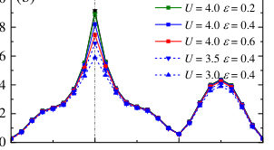
<figcaption class="paper-figure-caption"><b>Fig 3.</b> FIG. 3. (a) Sublattice electron density ρ on charge-rich (filled circles) and hole-rich (open circles) sites as a function of ε for various U. (b) Response of momentum-space spin struc- ture factor S(k) to different ε and U. The robust peak at (π, 0) suggests a spin-stripe order. All data are extracted from unbiased DQMC simulations at an inverse temperature β = 1/T = 6 with system size L = 16.</figcaption>
</figure>
<figure class="paper-figure-card">
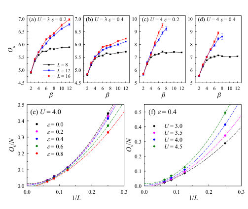
<figcaption class="paper-figure-caption"><b>Fig 4.</b> FIG. 4. Finite-size scaling analysis of the spin-stripe structure factor Os from unbiased DQMC simulations. (a)-(d) Evolu- tion of Os versus inverse temperature β = 1/T for various system sizes L at U = 3.0, 4.0 and ε = 0.2, 0.4. The enhance- ment of Os with increasing L at low temperatures signifies a tendency toward spin-stripe ordering. (e), (f) Normalized structure factor Os/N versus inverse size 1/L at β = 6. Data are extrapolated to 1/L →0 limit for (e) different ε with fixed U = 4.0 and (f) different U with fixed ε = 0.4. A finite intercept indicates the establishment of long-range order.</figcaption>
</figure>
</div>

<p><strong>Summary.</strong> This work explores a mechanism for Altermagnetism arising from a Spin-Density Wave instability rather than conventional antiferromagnetism. By modeling iron pnictides with an extended Hubbard model, the authors demonstrate that correlation effects drive a stripe-ordered insulating phase (SOAM). The application of an electric potential breaks symmetry in a way that unlocks measurable spin splitting, confirming the theoretical viability of this novel magnetic state.</p>
<p><strong>Why it may be interesting.</strong> While focused on condensed matter magnetism, the use of advanced quantum simulation techniques (DQMC) to study emergent magnetic orders in strongly correlated systems provides methodological insights relevant to open quantum system dynamics.</p>
<details>
<summary>Detailed structure</summary>
<p><strong>Main problem.</strong> Investigating whether Altermagnetism can emerge from a Spin-Density Wave (SDW) instability, moving beyond the conventional Antiferromagnetic paradigm.</p>
<p><strong>Main result.</strong> The study reveals a novel stripe-ordered altermagnetic (SOAM) insulating phase driven by correlation-induced $(\pi, 0)$ SDW instability. This phase is stabilized and characterized by unconventional $d_{xy}$-wave spin splitting when symmetry is broken by an electric potential.</p>
<p><strong>Method.</strong> A combination of Hartree-Fock mean-field theory for initial analysis and unbiased Determinant Quantum Monte Carlo (DQMC) simulations to confirm finite-temperature stability.</p>
<p><strong>Model / system.</strong> The system uses a minimal Hubbard model relevant to iron pnictides, studied on a square lattice with a four-sublattice basis. The Hamiltonian includes hopping terms, chemical potential, and an interaction term U, modified by a uniaxial staggered electric potential ($\epsilon$).</p>
<p><strong>Key observables.</strong> Spin-stripe order parameter ($\delta m_S$), spin structure factor $S(\mathbf{k})$, and the nonrelativistic spin splitting energy difference ($\Delta E$).</p>
<p><strong>Important parameters / regimes.</strong> Half-filling ($n=1$), hopping parameters ($t_1, t_2, t'_2$), interaction strength ($U$), and the staggered potential magnitude ($\epsilon$).</p>
<p><strong>Assumptions / limitations.</strong> The analysis relies on mapping the problem to a minimal Hubbard model and employing mean-field approximations alongside DQMC simulations.</p>
<p><strong>Figures summary.</strong> Figures illustrate real-space spin configurations, band structures showing symmetry protection/breaking, momentum-space spin structure factors confirming $(\pi, 0)$ instability, and phase diagrams mapping SOAM stability based on $U$ and $\epsilon$.</p>
<p><strong>Paper structure.</strong> The paper progresses by first establishing the SDW instability via mean-field calculations, then using DQMC to confirm the finite-temperature existence of the stripe order, and finally detailing how symmetry breaking ($\epsilon$) unlocks the characteristic altermagnetic spin splitting.</p>
</details>
<details>
<summary>Abstract</summary>
<p>Altermagnetism is conventionally identified within the paradigm of collinear antiferromagnets. Its potential realization within other spin instabilities, such as a spin-density wave (SDW), remains a fundamentally compelling open question. Here, we combine Hartree-Fock mean-field and unbiased determinant quantum Monte Carlo methods to investigate a minimal Hubbard model relevant to iron pnictides. We reveal a novel $d_{xy}$-wave stripe-ordered altermagnetic (SOAM) insulating phase driven fundamentally by the correlation-induced $(π,0)$ SDW instability. Within this phase, an introduced uniaxial staggered electric potential alters the underlying symmetry: it breaks the original combined time-reversal and spatial translation symmetry ($T_{d}\mathcal{T}$) and retains a combined time-reversal and mirror invariance ($M\mathcal{T}$), thereby unlocking the pronounced nonrelativistic spin splitting. Crucially, the exact finite-size scaling from our determinant quantum Monte Carlo simulations confirms that this correlation-driven SOAM phase stably survives at accessible finite temperatures. Our study pushes the frontier of altermagnetism beyond the conventional antiferromagnetic paradigm into the realm of SDW instability, advancing the fundamental understanding of altermagnetism in strongly correlated electron systems.</p>
</details>
<p><sub><a href="#top">↑ back to top</a></sub></p>

<p><a id="paper-2607.09933"></a></p>
<h3 id="device-independent-certification-of-tripartite-quantum-networks-with-bilocal-bell-inequalities"><a href="http://arxiv.org/abs/2607.09933v1">Device-independent certification of tripartite quantum networks with bilocal Bell inequalities</a></h3>
<p><strong>Authors:</strong> Patryk Michalski, Arturo Konderak, Remigiusz Augusiak<br>
<strong>Type:</strong> theory · <strong>Category:</strong> quantum information and computing · <strong>PDF:</strong> <a href="https://arxiv.org/pdf/2607.09933v1">https://arxiv.org/pdf/2607.09933v1</a><br>
<strong>Analysis basis:</strong> full PDF text, analyzed in chunks
<strong>Topic relevance:</strong> <code>entanglement &amp; information structure</code> <strong>2/5</strong> · <code>quantum measurements</code> <strong>1/5</strong></p>
<div class="figure-strip-hint">↔ Scroll figures horizontally</div>
<div class="paper-figures-scroll">
<figure class="paper-figure-card">
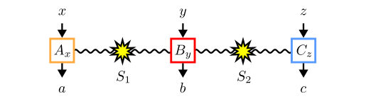
<figcaption class="paper-figure-caption"><b>Fig 1.</b> Figure 1. Schematic representation of the bilocal (or three-on-a-line) network with two independent sources, S1 and S2, distributing bi- partite correlations among three spatially separated observers, Alice, Bob, and Charlie. The observers choose their measurements freely and independently, labeled by x, y, and z, and obtain outcomes a, b, and c, respectively.</figcaption>
</figure>
<figure class="paper-figure-card">
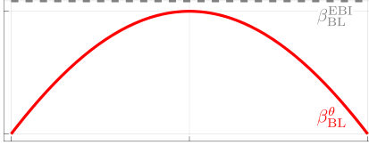
<figcaption class="paper-figure-caption"><b>Fig 2.</b> Figure 2. Bilocal bound βθ BL for the family of bilocal ROCN Bell inequalities generated by hθ as a function of the parameter θ. The dashed gray line indicates the value of the bilocal bound βEBI BL = 2 √</figcaption>
</figure>
</div>

<p><strong>Summary.</strong> This paper introduces a general method to construct nonlinear Bell inequalities for tripartite quantum networks using two independent sources of entanglement. By analyzing these inequalities, the authors achieve device-independent self-testing, proving that maximal violation forces the underlying shared states and measurement observables into specific, verifiable quantum structures.</p>
<p><strong>Why it may be interesting.</strong> This work provides powerful, purely theoretical tools for verifying fundamental assumptions about quantum resources in multi-party systems without needing to trust the measurement devices themselves. This is crucial for scaling up quantum communication protocols.</p>
<details>
<summary>Detailed structure</summary>
<p><strong>Main problem.</strong> The primary goal is developing general methods for constructing nonlinear Bell inequalities with self-testing properties specifically tailored for tripartite quantum networks.</p>
<p><strong>Main result.</strong> The authors present a framework that allows device-independent certification of the entire quantum network—including both the shared states and all measured observables—by relying solely on violating a single nonlocality witness.</p>
<p><strong>Method.</strong> They construct nonlinear Bell inequalities using Real Row-Orthogonal and Column-Normalized (ROCN) matrices, whose maximal quantum values are analytically determined. Self-testing is established by analyzing the rank of an auxiliary matrix derived from these coefficients.</p>
<p><strong>Model / system.</strong> The model is a tripartite quantum network involving three spatially separated observers (Alice, Bob, Charlie) connected via two independent sources distributing bipartite entangled states ($
ho_{AB_1}$ and $
ho_{B_2C}$).</p>
<p><strong>Key observables.</strong> Correlators $\langle A_x B_y C_z 
angle$, the nonlinear Bell inequality sum $S_h$, and the maximal quantum value $eta_h^Q$.</p>
<p><strong>Important parameters / regimes.</strong> The dimensions of measurement settings ($m$ for Alice/Charlie, $n$ for Bob) and the structure defined by the ROCN matrix $h$.</p>
<p><strong>Assumptions / limitations.</strong> The analysis relies on algebraic properties derived from ROCN matrices and assumes full rank conditions on auxiliary matrices to guarantee self-testing.</p>
<p><strong>Figures summary.</strong> Figure 1 schematically illustrates the bilocal network setup involving two sources ($S_1, S_2$) distributing states to Alice, Bob, and Charlie with specified measurement settings.</p>
<p><strong>Paper structure.</strong> The paper develops a general framework using ROCN matrices to formulate nonlinear Bell inequalities for the tripartite setting. It then derives conditions (like full rank of matrix M) under which violating these bounds guarantees self-testing of the underlying quantum correlations and measurements.</p>
</details>
<details>
<summary>Abstract</summary>
<p>While quantum networks have been extensively studied as a natural extension of the standard Bell scenario with a richer correlation structure, general constructions of nonlinear Bell inequalities with self-testing properties are still largely lacking. In this work, we present a general method for constructing such inequalities in the simplest network scenario, in which two independent sources distribute bipartite quantum states to three spatially separated observers. These inequalities allow for arbitrary numbers of binary measurements and are maximally violated by maximally entangled states of the corresponding local dimensions together with sets of pairwise anticommuting Clifford observables. Importantly, their maximal quantum values can be determined analytically, which makes them particularly promising for device-independent applications. In particular, we prove that these Bell inequalities can be used to device-independently certify the underlying quantum network, including both the quantum states produced by the sources and the observables measured by all parties. To the best of our knowledge, this is the first self-testing result for quantum networks that relies solely on the maximal violation of a nonlocality witness.</p>
</details>
<p><sub><a href="#top">↑ back to top</a></sub></p>

<p><a id="paper-2607.11665"></a></p>
<h3 id="the-time-space-complexity-of-checking-multiple-assertions-in-quantum-programs"><a href="http://arxiv.org/abs/2607.11665v1">The Time-Space Complexity of Checking Multiple Assertions in Quantum Programs</a></h3>
<p><strong>Authors:</strong> Shengyuan Yang, Charles Yuan<br>
<strong>Type:</strong> theory · <strong>Category:</strong> quantum information and computing · <strong>PDF:</strong> <a href="https://arxiv.org/pdf/2607.11665v1">https://arxiv.org/pdf/2607.11665v1</a><br>
<strong>Analysis basis:</strong> full PDF text, analyzed in chunks
<strong>Topic relevance:</strong> <code>quantum measurements</code> <strong>2/5</strong> · <code>measurement-induced transitions</code> <strong>1/5</strong></p>
<div class="figure-strip-hint">↔ Scroll figures horizontally</div>
<div class="paper-figures-scroll">
<figure class="paper-figure-card">
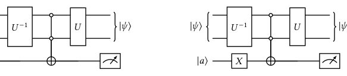
<figcaption class="paper-figure-caption"><b>Fig 1.</b> Fig. 3. The logical-OR based assertion circuit construction (a) can be transformed by applying an additional 𝑋gate on the ancilla (b), to fit the checker unitary.</figcaption>
</figure>
<figure class="paper-figure-card">
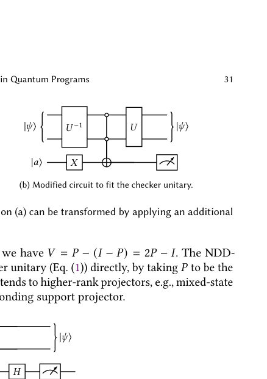
<figcaption class="paper-figure-caption"><b>Fig 2.</b> Fig. 4. The NDD-based assertion circuit, which already aligns with the checker unitary.</figcaption>
</figure>
</div>

<p><strong>Summary.</strong> This work establishes a formal framework to analyze the time-space cost of checking multiple assertions in quantum programs. It proves that while some checks require linear resources, others can be accomplished using only logarithmic resources by exploiting the specific information required. This has direct implications for designing robust and efficient quantum software.</p>
<p><strong>Why it may be interesting.</strong> It provides rigorous theoretical tools for understanding the overhead associated with debugging or verifying quantum algorithms, which is crucial for practical hardware implementation.</p>
<details>
<summary>Detailed structure</summary>
<p><strong>Main problem.</strong> The paper determines the fundamental time-space complexity required for checking multiple runtime assertions within a quantum program.</p>
<p><strong>Main result.</strong> While listing all assertion outcomes requires linear resource scaling, detecting if any failure occurs or identifying the first failure can be achieved with only logarithmic resource complexity—a significant asymptotic improvement.</p>
<p><strong>Method.</strong> The authors formalize the problem using checker unitaries and analyze complexity bounds by relating it to distinguishing patterns among fixed-length bit strings via automata theory tools.</p>
<p><strong>Model / system.</strong> The analysis is based on a quantum program model executed in a terminal-measurement setting, involving unitary operations interleaved with assertions that are recorded coherently into ancilla qubits.</p>
<p><strong>Key observables.</strong> Ancilla qubit count (S), number of program executions (T), and the specific failure semantics required ($  ext{ListAll}$, $    ext{ExistFail}$, $  ext{FirstFail}$).</p>
<p><strong>Important parameters / regimes.</strong> The number of assertions ($n$) dictates the scaling; the trade-off is fundamentally between $S$ and $T$.</p>
<p><strong>Assumptions / limitations.</strong> The analysis focuses on the terminal-measurement model, though lower bounds derived are claimed to apply to mid-circuit measurement settings.</p>
<p><strong>Figures summary.</strong> Figures illustrate sample quantum programs with multiple assertions and show constructions for checker unitaries using projection operators.</p>
<p><strong>Paper structure.</strong> The paper introduces the formal framework, derives complexity bounds by relating tasks to pattern distinction, proves strategy independence for certain failure modes, and concludes with a case study on Grover's algorithm.</p>
</details>
<details>
<summary>Abstract</summary>
<p>Runtime assertions are a promising mechanism for testing and debugging quantum programs. But unlike the classical world, checking a quantum program that contains multiple assertions often requires using additional space or running the program additional times. For example, on current quantum hardware where mid-circuit measurement is restricted or costly, an assertion's pass/fail outcome cannot be revealed immediately. Instead, it is routed into an ancilla qubit during execution and read out by a terminal measurement. For a program with $n$ assertions, a naive strategy uses $n$ ancillas to learn all $n$ outcomes, while an alternative uses one ancilla but repeats program execution over $n$ rounds, checking one assertion per round. Both satisfy $S \cdot T = O(n)$, where $S$ is the number of ancillas and $T$ the number of executions: a fundamental time-space trade-off.   Can one do asymptotically better? We reveal that the answer depends sharply on the information to be learned. Reporting the outcomes of all assertions requires linear complexity, but two partial-information tasks of detecting whether any assertion fails, and of identifying the first failing assertion, require only logarithmic complexity -- an asymptotic improvement. Moreover, the checking strategies for these tasks can trade time for space in useful ways. In this work, we formalize the complexity of checking multiple assertions in a quantum program. Using this definition, we establish its landscape of asymptotic lower bounds and constructive upper bounds. We confirm via a case study on Grover's algorithm that the resource costs of constructed strategies match theoretical predictions, illustrating the practical design space for quantum programmers.</p>
</details>
<p><sub><a href="#top">↑ back to top</a></sub></p>

<p><a id="paper-2607.10946"></a></p>
<h3 id="randomized-quantum-optimal-control"><a href="http://arxiv.org/abs/2607.10946v1">Randomized Quantum Optimal Control</a></h3>
<p><strong>Authors:</strong> Leeseok Kim, Francisco Riberi, Kevin Baca, Milad Marvian<br>
<strong>Type:</strong> theory · <strong>Category:</strong> quantum information and computing · <strong>PDF:</strong> <a href="https://arxiv.org/pdf/2607.10946v1">https://arxiv.org/pdf/2607.10946v1</a><br>
<strong>Analysis basis:</strong> full PDF text, analyzed in chunks
<strong>Topic relevance:</strong> <code>Keldysh / 2PI / non-Gaussian methods</code> <strong>1/5</strong> · <code>analog quantum simulation</code> <strong>1/5</strong> · <code>correlated / nonlocal dissipation</code> <strong>1/5</strong> · <code>driven-dissipative phase transition</code> <strong>1/5</strong> · <code>entanglement &amp; information structure</code> <strong>1/5</strong> · <code>methods for driven-dissipative</code> <strong>1/5</strong> · <code>non-equilibrium dynamics</code> <strong>1/5</strong></p>
<div class="figure-strip-hint">↔ Scroll figures horizontally</div>
<div class="paper-figures-scroll">
<figure class="paper-figure-card">
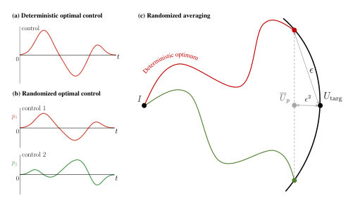
<figcaption class="paper-figure-caption"><b>Fig 1.</b> FIG. 1: Schematic comparison between deterministic and randomized quantum optimal control. (a) Conventional QOC optimizes a single control waveform to approximate the target unitary Utarg. (b) Randomized QOC optimizes an ensemble of control waveforms, shown here with two branches, together with the associated probability dis- tribution. (c) Averaging over the unitaries generated by different controls can yield a quadratically closer approx- imation to Utarg than the deterministic optimum.</figcaption>
</figure>
<figure class="paper-figure-card">
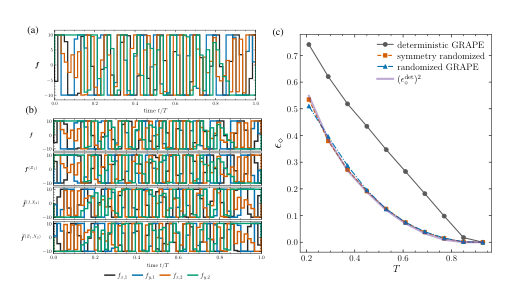
<figcaption class="paper-figure-caption"><b>Fig 2.</b> FIG. 2: Optimal control of CNOT implementation in the two-qubit model of (28), with J = 1 and fmax = 10. (a) Deterministic GRAPE solution f. (b) Four symmetry- generated branches of (32), obtained by sign flips and time reversal of f, and applied with equal probabilities of 1/4. (c) Diamond-distance error versus total time T. The symmetry-generated protocol suppresses the de- terministic GRAPE error quadratically, closely following [ϵdet ⋄(T)]2 (faint purple guide), and achieves essentially the same performance as randomized GRAPE.</figcaption>
</figure>
<figure class="paper-figure-card">
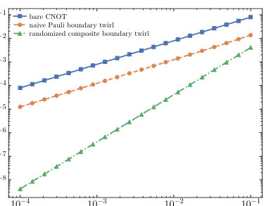
<figcaption class="paper-figure-caption"><b>Fig 3.</b> FIG. 3: Noise robustness of CNOT implementation un- der coherent 1-local noise. The randomized composite boundary twirl suppresses the leading coherent-noise con- tribution and achieves O(η2) diamond-distance scaling, whereas the bare CNOT and naive Pauli boundary-twirl protocols exhibit O(η) scaling.</figcaption>
</figure>
</div>

<p><strong>Summary.</strong> This paper introduces Randomized Quantum Optimal Control (QOC), a framework where optimization is performed over an ensemble of controls rather than a single path. It proves that this randomization technique allows protocols to reach target fidelities significantly faster and with lower error than deterministic methods by exploiting coherent error cancellation. The results are highly relevant for designing robust quantum gates in physical systems.</p>
<p><strong>Why it may be interesting.</strong> For AMO physicists working with open quantum systems or quantum optics, this work provides powerful theoretical tools for designing robust control sequences that actively cancel systematic errors arising from imperfect Hamiltonian knowledge or environmental coupling.</p>
<details>
<summary>Detailed structure</summary>
<p><strong>Main problem.</strong> The paper addresses how to improve quantum optimal control (QOC) protocols beyond deterministic methods by introducing a randomized framework that optimizes over an ensemble of controls.</p>
<p><strong>Main result.</strong> Randomized QOC can achieve significantly faster convergence and suppress systematic errors quadratically compared to the best deterministic protocols, even when considering noise robustness.</p>
<p><strong>Method.</strong> The authors develop theoretical constructions (like symmetry-based twirls and time-reversal pairings) and numerical algorithms (R-GRAPE) to optimize control ensembles and their associated probabilities.</p>
<p><strong>Model / system.</strong> The work analyzes controlling quantum systems governed by Hamiltonians, focusing on implementing target unitaries like CNOT. Error is quantified using the diamond distance ($\|\cdot\|_{\diamond}$) for process fidelity.</p>
<p><strong>Key observables.</strong> Diamond-distance error ($\epsilon_{\diamond}(T)$), observable estimation errors ($\langle O 
angle - \langle O 
angle_{	ext{ideal}}$), and the relative error generator ($E_\star$).</p>
<p><strong>Important parameters / regimes.</strong> Total evolution time $T$, amplitude bound $f_{\max}$, number of ensemble members $M$, and noise strength $\eta$.</p>
<p><strong>Assumptions / limitations.</strong> The analysis relies on specific Hamiltonian models, short-time regimes, and the ability to implement symmetry transformations via admissible controls.</p>
<p><strong>Figures summary.</strong> Figures compare deterministic vs. randomized error scaling (showing quadratic suppression) and illustrate noise robustness by comparing $O(\eta)$ versus $O(\eta^2)$ error scaling for CNOT implementation.</p>
<p><strong>Paper structure.</strong> The paper progresses from introducing the core concept of Randomized QOC, developing symmetry-based constructions to systematically reduce errors, benchmarking these methods on two-qubit gates like CNOT, and finally extending the analysis to achieve noise robustness by averaging over boundary pulses.</p>
</details>
<details>
<summary>Abstract</summary>
<p>Quantum optimal control (QOC) aims to find control functions that optimally steer a quantum system toward a target operation. We introduce a \emph{randomized} QOC framework where optimization is carried over an ensemble of control functions and their probabilities, instead of a single set of functions. Using this framework, we prove that randomized QOC can reach a target accuracy faster than any deterministic protocol under the same resource constraints. We also develop general symmetry-based constructions that convert a given control into an ensemble of controls that can systematically reduce the error. We benchmark these constructions for CNOT implementation and find that the resulting randomized protocol quadratically suppresses the error of the optimized deterministic solution. In addition, we introduce randomized GRAPE, which generalizes GRAPE to directly optimize control ensembles and their associated probabilities. Finally, as a related application, we discuss randomized boundary-pulse constructions {that enhance} robustness against coherent noise.</p>
</details>
<p><sub><a href="#top">↑ back to top</a></sub></p>

<p><a id="paper-2607.09935"></a></p>
<h3 id="bosonization-versus-the-nielsen-ninomiya-theorem"><a href="http://arxiv.org/abs/2607.09935v1">Bosonization versus the Nielsen-Ninomiya theorem</a></h3>
<p><strong>Authors:</strong> Saif Ullah Baig, Shi Chen, Aleksey Cherman, Maria Neuzil<br>
<strong>Type:</strong> theory · <strong>Category:</strong> strongly correlated electrons · <strong>PDF:</strong> <a href="https://arxiv.org/pdf/2607.09935v1">https://arxiv.org/pdf/2607.09935v1</a><br>
<strong>Analysis basis:</strong> full PDF text, analyzed in chunks
<strong>Topic relevance:</strong> <code>Keldysh / 2PI / non-Gaussian methods</code> <strong>1/5</strong> · <code>Kondo &amp; dissipative impurity</code> <strong>1/5</strong> · <code>analog quantum simulation</code> <strong>1/5</strong> · <code>driven-dissipative phase transition</code> <strong>1/5</strong> · <code>methods for driven-dissipative</code> <strong>1/5</strong></p>
<div class="figure-strip-hint">↔ Scroll figures horizontally</div>
<div class="paper-figures-scroll">
<figure class="paper-figure-card">
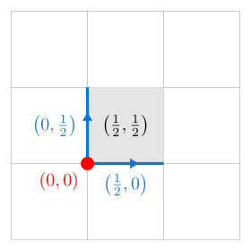
<figcaption class="paper-figure-caption"><b>Fig 1.</b> FIG. 1: Lattice sites, links and plaquettes are labeled using the 1</figcaption>
</figure>
<figure class="paper-figure-card">
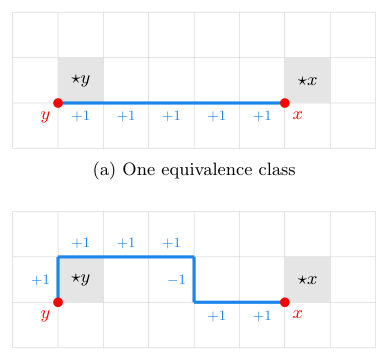
<figcaption class="paper-figure-caption"><b>Fig 2.</b> FIG. 2: Two equivalence classes of lattice paths in the correlation function ψ±(Cx) ¯ψ±(Cy) . A lattice path Cx,y is shown with the indicated values on the blue links and zero on all other links. Cx,y(ℓ) = +1 indicates that the path from y to x aligns with the orientation of the link ℓ∈Γ1 (given by Fig. 1), while Cx,y(ℓ) = −1 indicates the opposite.</figcaption>
</figure>
<figure class="paper-figure-card">
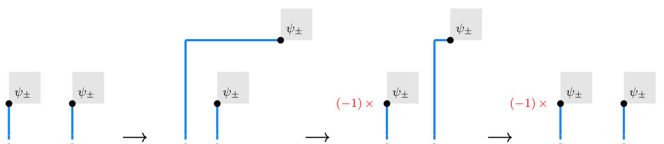
<figcaption class="paper-figure-caption"><b>Fig 3.</b> FIG. 3: The site-plaquette nature of the Weyl operators in combination with the topological line gives rise to the expected fermionic statistics. This illustrates anticommutativity under particle exchange.</figcaption>
</figure>
<figure class="paper-figure-card">
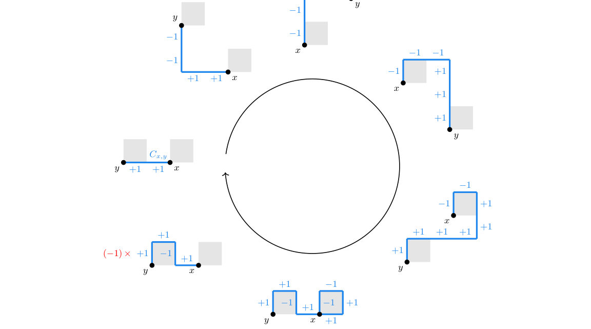
<figcaption class="paper-figure-caption"><b>Fig 4.</b> FIG. 4: When we drag y in a full circle around x for the correlation function ψ±(Cx) ¯ψ±(Cy) , the final lattice path Cx,y lies in the same branch as the initial lattice path Cx,y.</figcaption>
</figure>
<figure class="paper-figure-card">
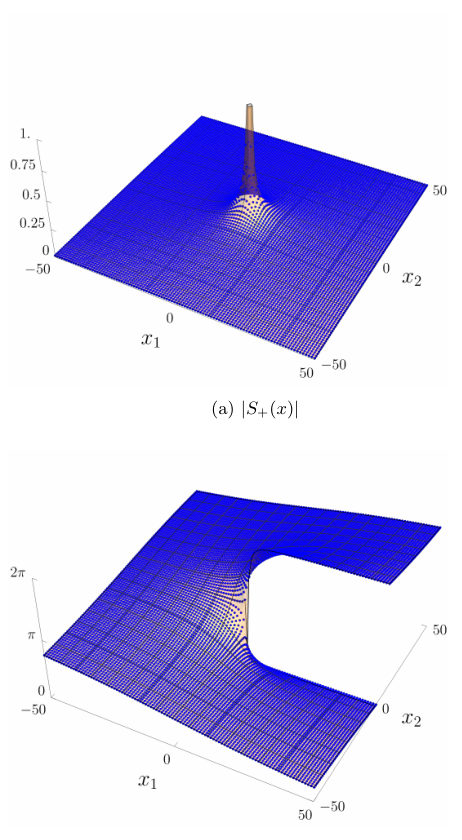
<figcaption class="paper-figure-caption"><b>Fig 5.</b> FIG. 5: Magnitude (top) and phase (bottom) of the correlation function S+(x) on a 100 × 100 lattice.</figcaption>
</figure>
</div>

<p><strong>Summary.</strong> This paper tackles the fundamental problem of regularizing chiral fermions on a lattice without violating symmetries. By employing bosonization within the 2D modified Villain model, the authors construct a doubler-free lattice Dirac operator that is non-local. This circumvents the Nielsen-Ninomiya theorem's constraints by sacrificing locality while preserving the underlying symmetry structure.</p>
<p><strong>Why it may be interesting.</strong> While focused on condensed matter/QFT, the techniques involving symmetry realization through bosonic dualities are highly relevant for understanding effective Hamiltonians in strongly correlated systems where continuum symmetries must be maintained on a lattice.</p>
<details>
<summary>Detailed structure</summary>
<p><strong>Main problem.</strong> The primary challenge addressed is how to construct a lattice regularization for chiral fermions while preserving crucial symmetries, circumventing the constraints imposed by the Nielsen-Ninomiya theorem.</p>
<p><strong>Main result.</strong> The authors successfully constructed a doubler-free lattice Dirac operator using a bosonic approach that results in a non-local kernel, thereby bypassing the strict locality requirement of the Nielsen-Ninomiya theorem.</p>
<p><strong>Method.</strong> The study employs bosonization techniques, utilizing the 2D modified Villain scalar model to relate an underlying ultra-local bosonic theory to the desired chiral fermionic description via path integral duality.</p>
<p><strong>Model / system.</strong> The focus is on the 2D modified Villain scalar model used to regularize chiral fermions. The analysis compares this bosonic formulation with continuum expectations for lattice Dirac operators, particularly in relation to chiral gauge theories.</p>
<p><strong>Key observables.</strong> Correlation functions of constructed chiral lattice fermion operators; the structure and non-locality of the reconstructed lattice Dirac operator.</p>
<p><strong>Important parameters / regimes.</strong> The dimensionality (2D), the specific form of the bosonic action (Villain model), and the finite lattice spacing ($a$).</p>
<p><strong>Assumptions / limitations.</strong> The approach assumes that the underlying microscopic bosonic theory remains ultra-local, even if the derived fermionic operator is non-local at finite spacing.</p>
<p><strong>Figures summary.</strong> Not specified in detail; notes refer to a 'Nielsen-Ninomiya scorecard' (Table I) and various correlation function comparisons on $S^2$ or $\mathbb{T}^2$.</p>
<p><strong>Paper structure.</strong> The paper progresses by reviewing the Nielsen-Ninomiya theorem, introducing bosonization as an alternative regularization method, applying this to the 2D modified Villain model via duality arguments, and finally confirming the properties of the resulting lattice operator.</p>
</details>
<details>
<summary>Abstract</summary>
<p>Thanks to bosonization, bosonic lattice models can offer a lattice regularization of chiral fermions. We construct chiral lattice fermion operators in the 2D modified Villain scalar model and evaluate their correlation functions. This microscopic bosonic model has an ultra-local action and an ultra-local symmetry that realizes the fermionic chiral symmetry under bosonization. The reconstructed lattice Dirac operator has no doublers, but is consistent with the Nielsen-Ninomiya theorem because it turns out to be non-local. The non-locality of this derived quantity at finite lattice spacing does not pose any obstructions to gauging the non-anomalous symmetries of the model, which is itself ultra-local.</p>
</details>
<p><sub><a href="#top">↑ back to top</a></sub></p>

<p><a id="paper-2607.09896"></a></p>
<h3 id="dark-optical-trapping-of-resonant-transition-metal-dichalcogenide-particles"><a href="http://arxiv.org/abs/2607.09896v1">Dark Optical Trapping of Resonant Transition-Metal Dichalcogenide Particles</a></h3>
<p><strong>Authors:</strong> Patrick Illetschek, Gleb Fedorovich, Albert Seredin, Gleb Tselikov, Valentin S. Volkov, Nikolai Kiesel, Markus Aspelmeyer, Mihail Petrov, Anton V. Zasedatelev<br>
<strong>Type:</strong> theory · <strong>Category:</strong> other · <strong>PDF:</strong> <a href="https://arxiv.org/pdf/2607.09896v1">https://arxiv.org/pdf/2607.09896v1</a><br>
<strong>Analysis basis:</strong> full PDF text, analyzed in chunks
<strong>Topic relevance:</strong> <code>analog quantum simulation</code> <strong>1/5</strong> · <code>correlated / nonlocal dissipation</code> <strong>1/5</strong> · <code>driven-dissipative phase transition</code> <strong>1/5</strong> · <code>methods for driven-dissipative</code> <strong>1/5</strong> · <code>non-equilibrium dynamics</code> <strong>1/5</strong></p>
<div class="figure-strip-hint">↔ Scroll figures horizontally</div>
<div class="paper-figures-scroll">
<figure class="paper-figure-card">
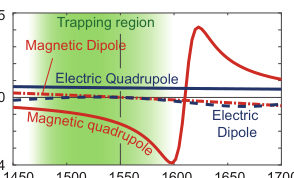
<figcaption class="paper-figure-caption"><b>Fig 1.</b> FIG. 1. The dark trap. (a) Normalized EM field intensity in the (xz) plane of the bottle beam formed by two circu- larly polarized Laguerre Gauss (LG) beams with a π phase shift at λ0 = 1550nm; orange arrows indicate force vectors. The beam propagates in the +z direction. The inset shows the force amplitude near the origin, revealing the presence of both a stable and an unstable trapping position. (b) Mul- tipole amplitudes of the field scattered by the particle near the magnetic quadrupole (MQ) resonance. The green-shaded region marks the wavelength range of stable trapping, while the dashed black line shows the trapping beam wavelength.</figcaption>
</figure>
<figure class="paper-figure-card">
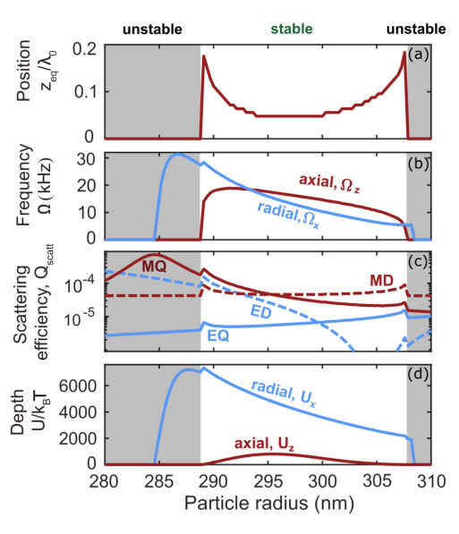
<figcaption class="paper-figure-caption"><b>Fig 2.</b> FIG. 2. Stable trapping conditions. (a) Equilibrium po- sition zeq versus particle radius, normalized to λ0 = 1550 nm. (b) Trap frequencies: axial z (red) and in-plane, radial x, y (blue) for P = 0.80 W. (c) Scattering efficiencies Qscatt of mul- tipoles at zeq for different particle radii: Magnetic quadrupole (MQ), Magnetic Dipole (MD), Electric Dipole (ED), Electric Quadrupole (EQ). (d) Trap depth in units of kBT (T = 300 K), along radial x, y (blue) and axial z (red) directions, for different particle radii. The shaded regions indicate particle radii where no 3D stable trapping is found at λ0 = 1550 nm.</figcaption>
</figure>
<figure class="paper-figure-card">
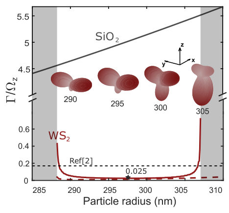
<figcaption class="paper-figure-caption"><b>Fig 3.</b> FIG. 3. Photon recoil in the dark trap. Ratio of photon recoil rate to trap frequency, Γ/Ωz, versus particle radius for a WS2 particle in the dark trap (red solid line), with a compen- sating force (red dashed line), for a SiO2 particle of the same radius (black solid line) and of radius 71.5 nm (black dashed line) [2]) trapped in a conventional bright trap. Overlaid are the scattered intensity patterns for particles of different radii.</figcaption>
</figure>
<figure class="paper-figure-card">
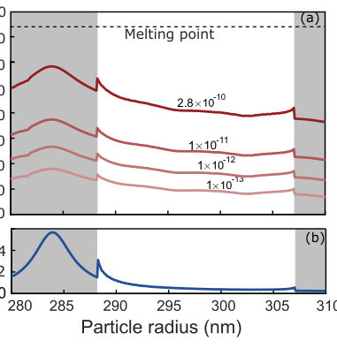
<figcaption class="paper-figure-caption"><b>Fig 4.</b> FIG. 4. Internal heating and thermal emission. (a) Equilibrium temperature Teq versus particle radius for differ- ent extinction coefficients k. The black dotted line indicates the melting point of WS2 at 1520 K. (b) Absorbed power of the trapped nanoparticle. Shaded regions indicate particle radii where stable trapping is not achieved.</figcaption>
</figure>
</div>

<p><strong>Summary.</strong> The paper proposes using resonant Transition-Metal Dichalcogenide (TMD) particles in a dark optical trap to overcome limitations in cooling and controlling macroscopic objects. By utilizing TMDs' high polarizability and low scattering rates, the authors demonstrate a method that significantly extends coherence time compared to traditional silica traps. This establishes TMDs as a promising platform for quantum physics experiments involving large masses.</p>
<p><strong>Why it may be interesting.</strong> This work directly addresses open quantum system dynamics by providing a mechanism (dark trapping with high-density resonators) to extend the coherence time of massive mechanical oscillators interacting with light fields, which is crucial for quantum sensing and measurement.</p>
<details>
<summary>Detailed structure</summary>
<p><strong>Main problem.</strong> The central challenge is achieving precise control and cooling of macroscopic particles trapped by light while mitigating detrimental effects like recoil events and optically induced heating.</p>
<p><strong>Main result.</strong> Dark trapping using resonant Transition-Metal Dichalcogenide (TMD) particles offers a highly promising platform for levitating large masses with significantly reduced motional decoherence compared to conventional traps.</p>
<p><strong>Method.</strong> The study employs full Mie theory combined with electromagnetic force calculations derived from the Maxwell stress tensor to model particle trapping in a dark optical trap geometry.</p>
<p><strong>Model / system.</strong> The system involves resonant dielectric TMD particles (like WS2) trapped using a single-beam, 'bottle-beam' configuration operating in an ultra-high vacuum. The analysis models the interaction via multipolar field decomposition near magnetic quadrupole resonances.</p>
<p><strong>Key observables.</strong> Suppression of the scattering rate relative to mechanical frequency ($\Gamma/\Omega$), equilibrium temperature ($T_{eq}$), and trapping frequencies (axial vs. radial).</p>
<p><strong>Important parameters / regimes.</strong> High refractive indices ($3.7-4.8$) and high densities of TMDs; operating wavelength $\lambda_0 = 1550 	ext{ nm}$; low ratio $\Gamma/\Omega \simeq 0.02$.</p>
<p><strong>Assumptions / limitations.</strong> The analysis assumes radiative cooling balances absorption for temperature estimation, but neglects thermo-optical effects like resonance position shifts.</p>
<p><strong>Figures summary.</strong> Figures illustrate the dark trap intensity profile (bottle beam), show stable trapping regions dependent on particle radius, and critically compare the low photon recoil ratio ($\Gamma/\Omega$) of TMDs versus high values for silica in bright traps.</p>
<p><strong>Paper structure.</strong> The paper progresses from identifying the physical challenges (recoil/heating) to proposing the dark trap geometry using TMDs. It then uses Mie theory to calculate trapping forces, analyze stability regions, and quantify improvements in coherence time and thermal management compared to existing materials.</p>
</details>
<details>
<summary>Abstract</summary>
<p>Mitigating recoil events and minimizing optically induced heating are central challenges in the precise control and cooling of macroscopic particles. To overcome this, we propose trapping resonant dielectric particles for applications in ultra-high vacuum (UHV) levitodynamics. Contrary to other approaches, where suppressing the parasitic resonant scattering was achieved in a standing wave geometry, here we propose a single beam geometry in a dark trap regime. As a promising material platform, we focus on a class of transition-metal dichalcogenide (TMD) particles with high polarizability, characterized by refractive indices in the range $3.7$-$4.8$ and densities up to $9.3~\mathrm{g\,cm^{-3}}$. Using full Mie theory, we identify a range of TMD particle radii that support stable axial and radial magnetic quadrupole trapping in a bottle-beam configuration. We predict that for WS$_2$ particles with a mass of $0.5 \times 10^{12}\,\mathrm{amu}$, one can expect suppression of the scattering rate relative to the mechanical frequency down to $Γ/Ω\simeq 0.02$. This corresponds to a coherence time extended by approximately three orders of magnitude compared with silica particles of the same mass trapped in conventional bright optical traps at UHV. Combined with significantly reduced internal heating, remaining well below the melting point of the material, dark trapping of resonant TMD macroscopic particles emerges as a promising platform for exploring quantum physics with large masses.</p>
</details>
<p><sub><a href="#top">↑ back to top</a></sub></p>

<p><a id="paper-2607.11857"></a></p>
<h3 id="noise-resilience-of-quantum-key-distribution-protocols-secured-against-independent-attacks-with-one-way-communication"><a href="http://arxiv.org/abs/2607.11857v1">Noise Resilience of Quantum Key Distribution Protocols Secured Against Independent Attacks With One-Way Communication</a></h3>
<p><strong>Authors:</strong> Adam Bílek, Ryszard Kukulski, Paulina Lewandowska, Łukasz Pawela, Zbigniew Puchała<br>
<strong>Type:</strong> theory · <strong>Category:</strong> quantum information and computing · <strong>PDF:</strong> <a href="https://arxiv.org/pdf/2607.11857v1">https://arxiv.org/pdf/2607.11857v1</a><br>
<strong>Analysis basis:</strong> full PDF text, analyzed in chunks
<strong>Topic relevance:</strong> <code>Keldysh / 2PI / non-Gaussian methods</code> <strong>1/5</strong> · <code>correlated / nonlocal dissipation</code> <strong>1/5</strong> · <code>driven-dissipative phase transition</code> <strong>1/5</strong> · <code>entanglement &amp; information structure</code> <strong>1/5</strong> · <code>methods for driven-dissipative</code> <strong>1/5</strong></p>
<div class="figure-strip-hint">↔ Scroll figures horizontally</div>
<div class="paper-figures-scroll">
<figure class="paper-figure-card">

<figcaption class="paper-figure-caption"><b>Fig 1.</b> Figure 1: Comparison between the key agreement probability of Alice and Bob and the maximum key agreement probability achievable by Eve for several QKD protocols. The gray field indicates the secured region where P(A = B|S) &gt; P(A = E|S). The black diagonal line denotes the security boundary xQ(ϵ) = yQ(ϵ). Markers correspond to increments of ϵ by 0.01 starting with ϵ = 0 for P(A = B|S) = 1. The larger markers represent the crossing points.</figcaption>
</figure>
<figure class="paper-figure-card">

<figcaption class="paper-figure-caption"><b>Fig 2.</b> Figure 2: Comparison between the key agreement probability of Alice and Bob and the maximum key agreement probability achievable by Eve for several QKD protocols QS(n, m) to compare with the six-state protocol Q6S = QS(1, 1). The gray field indicates the secured region where P(A = B|S) &gt; P(A = E|S). Again, the black diagonal line denotes the security boundary xQ(ϵ) = yQ(ϵ). Markers correspond to increments of ϵ by 0.01 starting with ϵ = 0 for P(A = B|S) = 1. The larger markers represent the crossing points.</figcaption>
</figure>
<figure class="paper-figure-card">

<figcaption class="paper-figure-caption"><b>Fig 3.</b> Figure 3: The general setup of a single round of the QKD protocol Q defined in Section 2. Alice prepares the state ρrA on registers A ⊗Aenv, Eve attacks the transmitted qubit with the channel E, and finally the parties Alice and Bob implement the LOCC measurement CrA,rB producing the key bits a and b.</figcaption>
</figure>
</div>

<p><strong>Summary.</strong> This paper rigorously determines the maximum level of environmental noise a single-qubit Quantum Key Distribution (QKD) protocol can tolerate while still guaranteeing a secure secret key. By introducing a novel noise metric and employing advanced optimization techniques like SDP, the authors prove that this fundamental threshold is $1/4$. The results highlight the superior noise resilience of the six-state protocol compared to established methods like BB84.</p>
<p><strong>Why it may be interesting.</strong> This work provides fundamental, mathematically rigorous limits on the physical robustness of quantum communication protocols against realistic noise channels, which is crucial for designing practical quantum networks.</p>
<details>
<summary>Detailed structure</summary>
<p><strong>Main problem.</strong> The research investigates the noise resilience of single-qubit Quantum Key Distribution (QKD) protocols when secured against independent eavesdropping attacks using one-way classical communication.</p>
<p><strong>Main result.</strong> The maximal achievable noise threshold ($\Upsilon$) for such QKD protocols is determined to be $1/4$, with the six-state protocol achieving this optimal resistance.</p>
<p><strong>Method.</strong> The authors introduce a novel noise metric ($\epsilon$) and use Semidefinite Programming (SDP) techniques, often combined with unitary symmetry averaging, to establish rigorous upper and lower bounds on the tolerable noise level.</p>
<p><strong>Model / system.</strong> The model involves single-qubit QKD protocols (BB84, B92, E91, six-state), analyzed under a prepare-and-measure framework subjected to an environmental noise channel $\Phi_\epsilon$.</p>
<p><strong>Key observables.</strong> Key agreement probability ($P(A=B|S)$) and the maximum information Eve can obtain ($y_Q(\epsilon)$).</p>
<p><strong>Important parameters / regimes.</strong> Noise intensity parameter ($\epsilon$), Noise threshold ($\Upsilon$), and protocol-specific parameters like $x_Q(\epsilon)$ and $y_Q(\epsilon)$.</p>
<p><strong>Assumptions / limitations.</strong> Security is analyzed assuming independent attacks by Eve and restricted to one-way classical communication post-processing.</p>
<p><strong>Figures summary.</strong> Figures compare the key agreement probability ($x_Q$) versus Eve's information gain ($y_Q$) for various protocols, showing how their intersection determines $\Upsilon_Q$.</p>
<p><strong>Paper structure.</strong> The paper establishes the problem by defining noise metrics and then uses SDP formulations to derive rigorous mathematical bounds ($\ge 1/4$ and $\le 1/4$), culminating in the proof that $\Upsilon = 1/4$.</p>
</details>
<details>
<summary>Abstract</summary>
<p>We investigate the resilience to noise of single-qubit quantum key distribution (QKD) protocols in the scenario of security against independent eavesdropping attacks and key distillation based on one-way classical communication. To this end, we introduce a noise-based metric that quantifies the efficiency of QKD protocols. Within this framework, we analyze the maximal noise levels that allow Alice and Bob to asymptotically establish a secure secret key. Using this assumption, we compare the noise tolerance of general single-qubit QKD protocols, in particular the BB84, B92, E91, and six-state protocols. Our main result determines the noise level threshold for QKD allowing one to distill an asymptotically secure secret key. Additionally, we demonstrate that the six-state protocol achieves the greatest resistance to noise while simultaneously yielding a higher post-selection efficiency than the other analyzed single-qubit protocols, confirming its robustness within the considered security model. Finally, we perform an analysis of the proposed noise-based metric and the conventional quantum bit error rate (QBER) metric.</p>
</details>
<p><sub><a href="#top">↑ back to top</a></sub></p>

<p><a id="paper-2607.11867"></a></p>
<h3 id="paraparticles-intrinsically-exhibit-hardy-space-breakdown"><a href="http://arxiv.org/abs/2607.11867v1">Paraparticles intrinsically exhibit Hardy-space breakdown</a></h3>
<p><strong>Authors:</strong> Kejun Liu<br>
<strong>Type:</strong> theory · <strong>Category:</strong> other · <strong>PDF:</strong> <a href="https://arxiv.org/pdf/2607.11867v1">https://arxiv.org/pdf/2607.11867v1</a><br>
<strong>Analysis basis:</strong> full PDF text, analyzed in chunks
<strong>Topic relevance:</strong> <code>Keldysh / 2PI / non-Gaussian methods</code> <strong>1/5</strong> · <code>correlated / nonlocal dissipation</code> <strong>1/5</strong> · <code>driven-dissipative phase transition</code> <strong>1/5</strong> · <code>methods for driven-dissipative</code> <strong>1/5</strong> · <code>non-equilibrium dynamics</code> <strong>1/5</strong></p>
<div class="figure-strip-hint">↔ Scroll figures horizontally</div>
<div class="paper-figures-scroll">
<figure class="paper-figure-card">

<figcaption class="paper-figure-caption"><b>Fig 1.</b> Figure 1: The shadow metric and its exposure. a, Closed system: η (orange) differs from Born inner product I (grey dashed) but is Schur-shielded. KK holds. b, gl(N) couplings are blocked: Born-Hermitian ⇔η-Hermitian. c, The R-structural coupling VRh lies outside the algebra; the shield is broken (∥ηVRh −V † Rhη∥/∥VRh∥= 1.67); KK breaks.</figcaption>
</figure>
<figure class="paper-figure-card">

<figcaption class="paper-figure-caption"><b>Fig 2.</b> Figure 2: Intrinsic KK breakdown. a, max Re(λQLQ) (UHP pole depth) versus coupling g. Paraparticle (orange): RHP eigenvalues appear at gc ≈0.1. Fermion (blue): for η = I, any Born- Hermitian V is automatically η-Hermitian; QLQ stays anti-Hermitian at all g. b, max |Im(Htot)|. The UHP pole appears at g = 0.1 before Htot itself complexifies (gc ≈0.12). c, Bath-truncation convergence: max Re stabilises within 4% from nmax = 4 to 5 at g = 0.6.</figcaption>
</figure>
<figure class="paper-figure-card">

<figcaption class="paper-figure-caption"><b>Fig 3.</b> Figure 3: Poles persist beyond spectral reality. a, Htot returns to real spectrum at g ≥10 (green). b, max Re(λQLQ) remains ≈1.0 (orange): ˜K(z) retains genuine UHP poles. The NZ projection permanently encodes the metric mismatch into the reduced dynamics—independently of Htot’s spectral reality.</figcaption>
</figure>
</div>

<p><strong>Summary.</strong> The paper proves that particles with non-unitary exchange statistics ('paraparticles') fundamentally break a mathematical property called Hardy-space analyticity in their memory kernel when interacting with an environment. This breakdown is exposed by interactions sensitive to the particle's internal structure, distinguishing it sharply from standard fermions and bosons.</p>
<p><strong>Why it may be interesting.</strong> This work provides a deep mathematical link between fundamental quantum statistics (unitarity of exchange) and the analytic properties of open system dynamics, suggesting that spectral signatures can reveal underlying non-unitary physics even when standard energy measurements appear normal.</p>
<details>
<summary>Detailed structure</summary>
<p><strong>Main problem.</strong> The paper investigates whether non-unitary exchange statistics, characteristic of 'paraparticles,' intrinsically violate Hardy-space analyticity in the memory kernel describing open quantum system dynamics.</p>
<p><strong>Main result.</strong> Paraparticles break this mathematical symmetry when coupled to an environment via interactions outside the system's symmetry algebra. This breakdown is intrinsic and occurs at coupling strengths where the total Hamiltonian remains spectrally real.</p>
<p><strong>Method.</strong> The analysis relies on examining the Kramers-Kronig relations, which require Hardy-space analyticity of the memory kernel derived from the Nakajima-Zwanzig projection formalism.</p>
<p><strong>Model / system.</strong> The model involves paraparticles with non-unitary exchange statistics coupled to an environment (bath). The dynamics are analyzed by comparing the required 'shadow metric' ($\eta$) against the physical Born inner product ($I$).</p>
<p><strong>Key observables.</strong> Hardy-space analyticity of the memory kernel $ ilde{K}(z)$, which is diagnosed by searching for poles in the Upper Half-Plane (UHP) corresponding to Right-Half-Plane (RHP) eigenvalues of the projected generator $QLQ$.</p>
<p><strong>Important parameters / regimes.</strong> The coupling strength ($g$), particularly noting a breakdown point near $g_c \approx 0.1$, and the ratio $\lVert\eta - I
Vert_F / \lVert I
Vert_F = 0.51$ for paraparticles.</p>
<p><strong>Assumptions / limitations.</strong> The core assumption is that the failure of Hardy-space analyticity, signaled by UHP poles in $   ilde{K}(z)$, provides a definitive signature of non-unitary statistics when coupled to an environment.</p>
<p><strong>Figures summary.</strong> Figures illustrate how coupling breaks the 'Schur shield' protecting the closed system dynamics, causing UHP poles in the memory kernel ($\max 	ext{Re}(\lambda Q_{LQ})$) even when the total Hamiltonian ($H_{tot}$) spectrum remains real at strong couplings.</p>
<p><strong>Paper structure.</strong> The paper builds a mathematical argument by first establishing the necessary conditions (Hardy-space analyticity $\iff$ KK relations) and then demonstrating how non-unitary statistics ($\eta 
eq I$) violates these conditions when an external interaction probes the internal flavor structure, contrasting this with unitary systems (fermions/bosons).</p>
</details>
<details>
<summary>Abstract</summary>
<p>The memory kernel of an open quantum system obeys Kramers--Kronig (KK) relations if and only if its Laplace transform is analytic in the upper half-plane -- a property known as Hardy-space analyticity. Here we show that non-unitary exchange statistics, the defining property of paraparticles, intrinsically breaks Hardy-space analyticity. The metric $η$ that guarantees a real closed-system spectrum for these particles necessarily differs from the physical Born inner product ($\|η- I\|_F / \|I\|_F = 0.51$) -- a mathematical consequence of the R-matrix's non-unitarity, not a parameter choice. This metric is a "shadow metric": Schur's lemma forces it to commute with every bilinear observable, making the distortion physically invisible in the closed system. But when the paraparticle is coupled to a bath, any coupling operator that lies outside the symmetry algebra -- that is, any interaction that sees the internal flavour structure -- exposes the distortion. The memory kernel then develops upper-half-plane poles at coupling $g_c \approx 0.1$, breaking standard dispersion relations before the closed-system spectrum complexifies. Fermions and bosons, whose exchange is unitary ($η= I$ as an analytic fact of the canonical anticommutation algebra), are immune at any coupling, because there is no distortion to expose. The violation is intrinsic: it distinguishes non-unitary exchange statistics from ordinary particle statistics at the level of the memory kernel's analytic structure.</p>
</details>
<p><sub><a href="#top">↑ back to top</a></sub></p>

<p><a id="paper-2607.10704"></a></p>
<h3 id="passive-spectral-admittance-bounds-and-exact-continuum-certificates-for-multiresonator-quantum-memory-interfaces"><a href="http://arxiv.org/abs/2607.10704v1">Passive spectral-admittance bounds and exact continuum certificates for multiresonator quantum-memory interfaces</a></h3>
<p><strong>Authors:</strong> Maxim V. Churilov<br>
<strong>Type:</strong> theory · <strong>Category:</strong> quantum information and computing · <strong>PDF:</strong> <a href="https://arxiv.org/pdf/2607.10704v1">https://arxiv.org/pdf/2607.10704v1</a><br>
<strong>Analysis basis:</strong> full PDF text, analyzed in chunks
<strong>Topic relevance:</strong> <code>Keldysh / 2PI / non-Gaussian methods</code> <strong>1/5</strong> · <code>correlated / nonlocal dissipation</code> <strong>1/5</strong> · <code>driven-dissipative phase transition</code> <strong>1/5</strong> · <code>interference shaping light</code> <strong>1/5</strong> · <code>methods for driven-dissipative</code> <strong>1/5</strong></p>
<div class="figure-strip-hint">↔ Scroll figures horizontally</div>
<div class="paper-figures-scroll">
<figure class="paper-figure-card">

<figcaption class="paper-figure-caption"><b>Fig 1.</b> FIG. 1. Operational qualification of the passive interface. The rational admittance fixes scattering from the signal port into controlled output fields. Reflection defect becomes memory-write probability only after a coherent isometry maps the admitted controlled-field subspace into a long-lived register; dashed channels represent uncontrolled loss and do not count as storage.</figcaption>
</figure>
<figure class="paper-figure-card">

<figcaption class="paper-figure-caption"><b>Fig 2.</b> FIG. 2. Reflection magnitude for four passive symmetric candidates. Vertical dotted lines mark the design band. The spectra flatten as the number of controlled internal modes increases.</figcaption>
</figure>
<figure class="paper-figure-card">

<figcaption class="paper-figure-caption"><b>Fig 3.</b> FIG. 3. Positive-frequency half of the 11-mode reflection spectrum. The dashed line is the exact continuum upper bound. Markers show numerically resolved ripple maxima; they are diagnostics, whereas the bound is proved by exact polynomial arithmetic.</figcaption>
</figure>
<figure class="paper-figure-card">

<figcaption class="paper-figure-caption"><b>Fig 4.</b> FIG. 4. Reproducible Monte Carlo sensitivity of the nominal 11-mode candidate under independent mean-preserving log- normal perturbations. Solid markers show the median and 95th percentile of the dense-grid maximum. These statistics are model-dependent diagnostics, not deterministic guarantees.</figcaption>
</figure>
<figure class="paper-figure-card">

<figcaption class="paper-figure-caption"><b>Fig 5.</b> Figure 4 shows a separate, fully reproducible Monte Carlo sensitivity study. Every positive 11-mode param- eter is perturbed independently according to the mean- preserving log-normal model p′ = p exp(σZ −σ2/2) with Z ∼N(0, 1); 1200 samples per spread, a 12001-point grid on [0, 1], and seed 20260711 are used. This is not a confidence statement about any fabrication process unless that distribution is experimentally justified. Its purpose is diagnostic: the nominal minimax design is sharp, and robust synthesis or postfabrication retuning is likely to be important. For experimental use, the dimensionless design is scaled by a chosen angular-frequency band half-width B with κ = 2B. The...</figcaption>
</figure>
</div>

<p><strong>Summary.</strong> This theoretical paper develops a rigorous framework to certify the broadband write efficiency of passive quantum memory interfaces. It moves beyond simple peak measurements by deriving fundamental spectral bounds (Bode–Fano floor) and providing exact mathematical certificates based on polynomial positivity for specific multi-mode designs. This work establishes quantitative, verifiable performance guarantees essential for building reliable quantum hardware.</p>
<p><strong>Why it may be interesting.</strong> This work provides essential mathematical tools—exact certificates and rigorous lower bounds—for quantifying the performance limits of quantum hardware components like quantum memories, which is crucial for scaling up photonic quantum information processing.</p>
<details>
<summary>Detailed structure</summary>
<p><strong>Main problem.</strong> The paper addresses the need for a rigorous, continuous-band certificate to quantify the write efficiency of broadband quantum memory interfaces, moving beyond simple peak measurements.</p>
<p><strong>Main result.</strong> It derives the Bode–Fano floor bound for passive interfaces and provides an exact, computer-assisted certificate showing that specific multi-mode designs achieve high conditional uniform write guarantees (e.g., &gt;0.9958).</p>
<p><strong>Method.</strong> The analysis uses positive-real spectral admittance modeling, relating write probability to the minimum reflection magnitude $\|r\|_{\infty}$ over the operational band.</p>
<p><strong>Model / system.</strong> The system is a passive one-port multiresonator interface modeled by a positive-real spectral admittance $\Sigma(s)$, which couples an input field to internal long-lived quantum memory registers.</p>
<p><strong>Key observables.</strong> Worst-case write efficiency ($\eta_{wc}^w$), reflection amplitude $|r(i\omega)|$, and the minimum achievable $\|r\|_{\infty}$ over a specified band $\mathcal{B}$.</p>
<p><strong>Important parameters / regimes.</strong> The spectral bandwidth $B$ and coupling parameter $\kappa$; the specific number of resonant modes (e.g., 11-mode design).</p>
<p><strong>Assumptions / limitations.</strong> The analysis assumes passive, stationary elements and focuses on rationalized designs to derive exact certificates; global optimality over all pole placements remains an open question.</p>
<p><strong>Figures summary.</strong> Figure 2 illustrates the spectral flattening of the reflection magnitude $|r(i\omega)|$ as the number of controlled modes increases. Figure 4 shows Monte Carlo sensitivity analysis for the write efficiency.</p>
<p><strong>Paper structure.</strong> The paper progresses from defining the operational deficiency (reflection defect) to deriving theoretical bounds (Bode–Fano floor), establishing convexity conditions for synthesis, and finally providing exact verification methods using polynomial positivity checks (Sturm root counting).</p>
</details>
<details>
<summary>Abstract</summary>
<p>Broadband quantum-memory interfaces are often assessed by center-frequency impedance matching or by a sampled efficiency curve. Neither supplies an operational continuous-band certificate, and absorption is not automatically reversible storage. We model a passive one-port multiresonator interface by a positive-real spectral admittance with explicitly identified controlled output channels. If their one-photon subspace is mapped isometrically into long-lived registers, the write probability for a normalized spectrum $f$ supported in a band $\mathcal{B}$ is $1-\int_{\mathcal{B}} |r(iω)|^2 |f(ω)|^2\,dω$, and the worst-case write efficiency is $1-\|r\|_{L^\infty(\mathcal{B})}^2$. We prove that a finite passive rational interface cannot have zero reflection on a nonzero interval and derive the Bode--Fano floor $\|r\|_\infty \geq \exp[-πκ/(2B)]$ for a band of half-width $B$. At fixed pole locations, minimax synthesis is a quasiconvex semi-infinite problem in the oscillator strengths. We then give an exact computer-assisted certificate: after a decimal design is converted into an explicit rational system, the continuum reflection bound becomes positivity of one univariate polynomial and is proved by Sturm root counting; exact Routh--Hurwitz determinants certify stability and minimum phase. In units $κ=2$ and $B=1$, an 11-mode design obeys $0.064112405 \leq \|r\|_\infty < 0.0641125$, implying a conditional uniform write guarantee above $0.995889587$. This is a reproducible certificate for a specified interface, not a claim of global movable-pole optimality or of an experimentally complete memory.</p>
</details>
<p><sub><a href="#top">↑ back to top</a></sub></p>

<p><a id="paper-2607.11793"></a></p>
<h3 id="private-capacity-of-quantum-channels-induced-by-non-stabilizer-environmental-states"><a href="http://arxiv.org/abs/2607.11793v1">Private Capacity of Quantum Channels Induced by Non-stabilizer Environmental States</a></h3>
<p><strong>Authors:</strong> Chunhe Xiong, Sunho Kim, Long Long, Junde Wu<br>
<strong>Type:</strong> theory · <strong>Category:</strong> quantum information and computing · <strong>PDF:</strong> <a href="https://arxiv.org/pdf/2607.11793v1">https://arxiv.org/pdf/2607.11793v1</a><br>
<strong>Analysis basis:</strong> full PDF text, analyzed in chunks
<strong>Topic relevance:</strong> <code>Keldysh / 2PI / non-Gaussian methods</code> <strong>1/5</strong> · <code>correlated / nonlocal dissipation</code> <strong>1/5</strong> · <code>driven-dissipative phase transition</code> <strong>1/5</strong> · <code>entanglement &amp; information structure</code> <strong>1/5</strong> · <code>methods for driven-dissipative</code> <strong>1/5</strong></p>
<div class="figure-strip-hint">↔ Scroll figures horizontally</div>
<div class="paper-figures-scroll">
<figure class="paper-figure-card">

<figcaption class="paper-figure-caption"><b>Fig 1.</b> Low-resolution page preview, page 2</figcaption>
</figure>
<figure class="paper-figure-card">

<figcaption class="paper-figure-caption"><b>Fig 2.</b> Low-resolution page preview, page 3</figcaption>
</figure>
<figure class="paper-figure-card">

<figcaption class="paper-figure-caption"><b>Fig 3.</b> Low-resolution page preview, page 4</figcaption>
</figure>
<figure class="paper-figure-card">

<figcaption class="paper-figure-caption"><b>Fig 4.</b> Low-resolution page preview, page 5</figcaption>
</figure>
<figure class="paper-figure-card">

<figcaption class="paper-figure-caption"><b>Fig 5.</b> Low-resolution page preview, page 6</figcaption>
</figure>
</div>

<p><strong>Summary.</strong> This paper analyzes the private capacity of quantum channels by incorporating the concept of a 'magic resource' derived from environmental states. It shows that stabilizer environments yield zero private capacity, while non-zero capacities require magic resources. The findings establish a quantitative upper bound for this capacity based on the environment's magic measure.</p>
<p><strong>Why it may be interesting.</strong> This work provides a rigorous framework connecting fundamental quantum resources (like 'magic') directly to quantifiable communication limits (private capacity), which is highly relevant for understanding noise resilience in quantum networks or computation protocols.</p>
<details>
<summary>Detailed structure</summary>
<p><strong>Main problem.</strong> The paper investigates the private capacity of quantum channels induced by non-stabilizer environmental states using quantum convolution theory.</p>
<p><strong>Main result.</strong> It establishes that zero private capacity results when the environment is a stabilizer state, while non-zero capacities require 'magic' environmental resources. Furthermore, it provides an upper bound for this capacity related to the magic resource of the environment.</p>
<p><strong>Method.</strong> The analysis employs quantum convolution theory, utilizing characteristic functions and concepts like the 'magic resource' measure (MRM) to characterize channel properties.</p>
<p><strong>Model / system.</strong> The focus is on discrete-variable quantum systems modeled by convolutional channels derived from specific unitary operators acting on $n$-qudit Hilbert spaces. The environment state $\sigma$ plays a crucial role in determining the capacity.</p>
<p><strong>Key observables.</strong> Private capacity ($P(\Lambda)$), Quantum capacity ($Q(\Lambda)$), and the Magic Resource Measure ($    ext{MRM}(\sigma)$).</p>
<p><strong>Important parameters / regimes.</strong> The structure of the environmental state (stabilizer vs. magic) and the specific form of the convolutional unitary matrix $G$.</p>
<p><strong>Assumptions / limitations.</strong> The analysis relies on extending quantum convolution theory concepts to characterize communication limits, particularly concerning the regularization of capacity measures.</p>
<p><strong>Paper structure.</strong> The paper develops theoretical tools based on characteristic functions and resource theories to analyze channel capacities. It proceeds by proving zero capacity for stabilizer environments, demonstrating non-zero capacity for magic environments, and finally deriving an upper bound using the MRM.</p>
</details>
<details>
<summary>Abstract</summary>
<p>We investigate the private capacity of quantum channels using the recently proposed quantum convolution theory for discrete-variable quantum systems. We focus on the role of the magic resource played in this framework. Firstly, for a large class of convolutional channels, we find that the private capacity is zero if the fixed environmental state is a stabilizer state. Moreover, we show that the private capacity can be nonzero for some magic environmental states. Furthermore, we show that the private capacity of a discrete beam splitter unitary is upper-bounded by the amount of magic of the environmental state. In addition, if the environmental state exhibits a certain symmetric structure, even if it is magic, the corresponding private capacity will also vanish for a class of convolution. These results emphasize the role of magic resources in quantum communication</p>
</details>
<p><sub><a href="#top">↑ back to top</a></sub></p>

<p><a id="paper-2607.10503"></a></p>
<h3 id="a-cascade-of-volterra-operator-bbp-transitions-in-a-correlated-wigner-matrix"><a href="http://arxiv.org/abs/2607.10503v1">A Cascade of Volterra-Operator BBP Transitions in a Correlated Wigner Matrix</a></h3>
<p><strong>Authors:</strong> Masato Hisakado<br>
<strong>Type:</strong> theory · <strong>Category:</strong> statistical mechanics · <strong>PDF:</strong> <a href="https://arxiv.org/pdf/2607.10503v1">https://arxiv.org/pdf/2607.10503v1</a><br>
<strong>Analysis basis:</strong> full PDF text, analyzed in chunks
<strong>Topic relevance:</strong> <code>Keldysh / 2PI / non-Gaussian methods</code> <strong>1/5</strong> · <code>analog quantum simulation</code> <strong>1/5</strong> · <code>driven-dissipative phase transition</code> <strong>1/5</strong> · <code>non-equilibrium universality</code> <strong>1/5</strong></p>
<div class="figure-strip-hint">↔ Scroll figures horizontally</div>
<div class="paper-figures-scroll">
<figure class="paper-figure-card">

<figcaption class="paper-figure-caption"><b>Fig 1.</b> FIG. 1. (a) Full eigenvalue spectrum of M (N = 2000, one realization), sorted eigenvalue λk(M)</figcaption>
</figure>
<figure class="paper-figure-card">

<figcaption class="paper-figure-caption"><b>Fig 2.</b> FIG. 2. Critical coupling b(k) c = σ/σk(AK) vs. mode number k (σ = 1), for all six kernels of Sec. IV.</figcaption>
</figure>
</div>

<p><strong>Summary.</strong> This paper analyzes a correlated Wigner random matrix whose structure forces its eigenvalues to exhibit a cascade of Baik–Ben Arous–Péché transitions. The key finding is that this entire hierarchy of critical points is precisely determined by the singular values of an underlying compact Volterra integral operator. This establishes a general principle linking structured correlations in random matrices to spectral properties of continuous operators.</p>
<p><strong>Why it may be interesting.</strong> While mathematically rooted in random matrix theory, the concept of spectral rigidity and structured perturbations governing phase transitions has analogues in quantum many-body systems where correlations (like those induced by external fields or interactions) can induce discrete spectral features rather than smooth crossovers.</p>
<details>
<summary>Detailed structure</summary>
<p><strong>Main problem.</strong> The study investigates how specific, structured correlations in a Wigner-type random matrix lead to a cascade of eigenvalue transitions rather than the typical single transition.</p>
<p><strong>Main result.</strong> The detachment of eigenvalues from the bulk spectrum is governed by the singular values of an associated compact Volterra integral operator, creating a discrete hierarchy of critical points.</p>
<p><strong>Method.</strong> The analysis uses large-N limits and spectral theory, relating the matrix problem to solving the Karhunen--Loève expansion for Brownian motion to determine the limiting operators.</p>
<p><strong>Model / system.</strong> The model is a Wigner-type random matrix $S$ with off-diagonal correlations generated by shared row/column factors. The analysis extends this to general rank-$r$ deformations involving singular values derived from compact integral operators.</p>
<p><strong>Key observables.</strong> Outlier eigenvalues, the critical coupling strengths ($b^{(k)}_c$), and the spectral moments (e.g., $ ext{Tr}(H^2)/N$).</p>
<p><strong>Important parameters / regimes.</strong> The correlation strength ($\sigma$) and the matrix size ($N 	o \infty$ limit). The transition hierarchy is indexed by $k=1, 2, 3, \dots$.</p>
<p><strong>Assumptions / limitations.</strong> The analysis relies on identifying the large-N limit of the discrete matrix structure with continuous integral operators (Volterra operator) and assumes convergence based on spectral theory conjectures.</p>
<p><strong>Figures summary.</strong> Figures illustrate the full and bulk eigenvalue spectra showing outliers scaling as $O(N)$, and compare numerically calculated eigenvalues against theoretical predictions derived from singular values for various kernels.</p>
<p><strong>Paper structure.</strong> The paper progresses by first establishing the correlation structure, then deriving the connection to the Volterra operator spectrum via the Karhunen--Loève expansion. It generalizes this finding to show that the entire hierarchy of transitions is dictated by the spectrum of the associated compact integral operator, confirmed across multiple kernel types.</p>
</details>
<details>
<summary>Abstract</summary>
<p>We study a Wigner-type random matrix in which the off-diagonal correlation between entries is generated by a random factor shared among all entries in a given row and column, with the coupling strength held fixed as the matrix size grows. Although the bulk spectral moments remain those of the pure semicircle law, we show that the underlying correlation matrix decomposes into a vanishing bulk together with a countable family of outlier eigenvalues that, at fixed rank $k$, converge to the singular values of a compact Volterra (cumulative-sum) integral operator -- obtained in closed form via the classical Karhunen--Loève expansion of Brownian motion and confirmed numerically to better than one percent across the top twenty such values. Each singular value drives an independent Baik--Ben Arous--Péché (BBP) transition as the coupling strength increases, producing an evenly spaced, discrete hierarchy of critical points -- rather than a single transition -- at each of which one further eigenvalue detaches from the semicircle edge, in close agreement with direct diagonalization. We show that this mechanism generalizes to a broader family of correlation structures, with the critical hierarchy in every case set by the spectrum of an associated compact integral operator.</p>
</details>
<p><sub><a href="#top">↑ back to top</a></sub></p>

<p><a id="paper-2607.11355"></a></p>
<h3 id="iron-based-superconductors-a-decade-of-materials-magnetism-and-mechanisms"><a href="http://arxiv.org/abs/2607.11355v1">Iron-Based Superconductors: A Decade of Materials, Magnetism, and Mechanisms</a></h3>
<p><strong>Authors:</strong> Xingye Lu, Hechang Lei, Jun Zhao, Hideo Hosono, Pengcheng Dai<br>
<strong>Type:</strong> both · <strong>Category:</strong> strongly correlated electrons · <strong>PDF:</strong> <a href="https://arxiv.org/pdf/2607.11355v1">https://arxiv.org/pdf/2607.11355v1</a><br>
<strong>Analysis basis:</strong> full PDF text, analyzed in chunks
<strong>Topic relevance:</strong> <code>Kondo &amp; dissipative impurity</code> <strong>1/5</strong> · <code>analog quantum simulation</code> <strong>1/5</strong> · <code>exotic spin models in light-matter</code> <strong>1/5</strong> · <code>spintronics-quantum-optics interface</code> <strong>1/5</strong></p>
<div class="figure-strip-hint">↔ Scroll figures horizontally</div>
<div class="paper-figures-scroll">
<figure class="paper-figure-card">

<figcaption class="paper-figure-caption"><b>Fig 1.</b> FIG. 1 Crystal structures and structural-family notation of representative iron-based superconductors (FeSCs). The nu- merical labels in the family names denote the stoichiometric ratios of the principal structural blocks in the correspond- ing compounds. Here, A denotes an alkali metal (Li, Na, K, Rb, or Cs); AE an alkaline-earth metal (Ca, Sr, or Ba); Ln a lanthanide element; TM a transition-metal element; M metallic ion in MNHFeCh-122; Pn a pnictogen (P or As); Ch a chalcogen (S, Se, or Te); and Org an organic molecular spacer. Panels (a)–(p) show representative members of the major FeSC structural families.</figcaption>
</figure>
<figure class="paper-figure-card">

<figcaption class="paper-figure-caption"><b>Fig 2.</b> FIG. 2 (a) Local structure of 2D Fe layer with highlighted nearest and next-nearest neighbor Fe–Fe atomic distance dNN Fe−−Fe and dNNN Fe−−Fe. (b) Definitions of X anion height hFeX and X–Fe–X bond angle α. (c) Correlation between Tc and α in various FeSCs. The dotted line denotes the bond angle for a regular tetrahedron. From (Hosono and Kuroki, 2015). (d) Tc as a function of hFeX for representative FeSCs. From (Lu et al., 2013; Mizuguchi et al., 2010).</figcaption>
</figure>
<figure class="paper-figure-card">

<figcaption class="paper-figure-caption"><b>Fig 3.</b> FIG. 4 (a) Crystal structure of FeSe-11111. (b) Tempera- ture dependence of magnetic susceptibility 4πχ of FeSe-11111 polycrystal. From (Lu et al., 2015). (c) A schematic illustra- tion of the hydrothermal ionic exchange reaction. From (Dong et al., 2015a).</figcaption>
</figure>
<figure class="paper-figure-card">

<figcaption class="paper-figure-caption"><b>Fig 4.</b> FIG. 5 (a) Crystal structure of (CTA)0.3FeSe. From (Shi et al., 2018a). (b) Temperature dependence of 4πχ of (CTA)0.3FeSe. From (Shi et al., 2018a). (c) Crystal structure of (TBA)0.3FeSe with hydrogen atom neglected. (d) Resis- tance as a function of temperature for (TBA)0.3FeSe. From (Shi et al., 2018b). (e) Crystal structure of (TMA)0.5Fe2Se2. (f) 4πχ of (TMA)0.5Fe2Se2. Inset: resistivity of a cold-pressed pellet. From (Rendenbach et al., 2021).</figcaption>
</figure>
<figure class="paper-figure-card">

<figcaption class="paper-figure-caption"><b>Fig 5.</b> FIG. 6 (a) A schematic illustration of the FeSe thin flake EDL-FET device. The ionic liquid DEME-TFSI serves as the dielectric, covering the sample and gate electrodes. (b) Temperature dependence of the resistance R(T) for FeSe thin flake at different Vg. Inset: enlarged view of R(T) near Tc. From (Lei et al., 2016). (c) A schematic diagram of a SIC- FET device with a solid ion conductor as the gate dielectric. (d) Phase diagram of the Li-intercalated FeSe thin flake as a function of the Li/Fe ratio. A series of structural phase transitions from the FeSe-11 phase to the LiFeSe-122 I phase, then to the LiFeSe-122 II phase, takes place. The Hall num- ber nH is plotted to show the variation in...</figcaption>
</figure>
</div>

<p><strong>Summary.</strong> This comprehensive review surveys the last decade of research on iron-based superconductors (FeSCs), focusing on how structural changes tune their magnetic and nematic orders to achieve high-$T_c$ superconductivity. It synthesizes evidence showing that spin fluctuations mediate a sign-changing $s_{\pm}$ pairing, while also pointing toward topological superconducting possibilities through precise material engineering.</p>
<p><strong>Why it may be interesting.</strong> This work is highly relevant as it deals with strongly correlated electron systems exhibiting unconventional superconductivity, providing a rich playground for studying emergent quantum phases driven by electronic correlations and lattice degrees of freedom.</p>
<details>
<summary>Detailed structure</summary>
<p><strong>Main problem.</strong> The central problem is understanding high-temperature superconductivity in iron-based superconductors (FeSCs) by elucidating the complex interplay between magnetism, electronic nematicity, and superconducting pairing mechanisms.</p>
<p><strong>Main result.</strong> The review highlights that FeSCs exhibit a sign-changing $s_{\pm}$ pairing symmetry driven by spin fluctuations, and structural tuning can induce topological superconductivity in these materials.</p>
<p><strong>Method.</strong> The paper synthesizes decades of work combining experimental techniques like inelastic neutron scattering (INS) and ARPES with theoretical understanding of electronic structure derived from crystal chemistry.</p>
<p><strong>Model / system.</strong> The physical system is FeSCs, which are layered, quasi-two-dimensional materials characterized by $ ext{Fe}$ $3d$ orbitals near the Fermi level. The structural unit involves $ ext{FeX}_4$ tetrahedra whose geometry dictates electronic properties.</p>
<p><strong>Key observables.</strong> Superconducting critical temperature ($T_c$), spin excitation resonance, gap symmetry ($s_{\pm}$, nodal $s$, $d$-wave), and lattice parameters (e.g., anion height $h_{	ext{FeX}}$).</p>
<p><strong>Important parameters / regimes.</strong> The interplay between magnetic order, nematicity, and doping/pressure is critical; structural regularity ($\alpha \approx 109.47^\circ$) correlates with high $T_c$.</p>
<p><strong>Assumptions / limitations.</strong> The gap symmetry must be treated in a material-specific framework due to the influence of orbital fluctuations and quasiparticle damping.</p>
<p><strong>Figures summary.</strong> Figures illustrate crystal structures, defining key structural parameters like nearest/next-nearest neighbor distances ($d_{	ext{NN}}, d_{	ext{NNN}}$), anion height ($h_{	ext{FeX}}$), and bond angle ($\alpha$), which correlate with superconducting properties.</p>
<p><strong>Paper structure.</strong> The review progresses by first establishing the FeSC platform, detailing how structural tuning controls electronic states (nematicity/magnetism), then analyzing spectroscopic evidence for pairing symmetry (resonance structure), and concluding with technological potential and open questions regarding gap characterization.</p>
</details>
<details>
<summary>Abstract</summary>
<p>Since its discovery in 2008, iron-based superconductors (FeSCs) have become a central platform for exploring high-temperature superconductivity in multiband, electron-correlated materials. This review focuses on major developments over the past decade or so, emphasizing experimental advances, pairing mechanisms, and emerging applications. Structural tuning through chemical substitution, pressure, and epitaxial growth enables precise control of the electronic, magnetic, and superconducting ground states, thereby revealing their interplay. In particular, the electronic nematic phase and stripe-type antiferromagnetic order-often coexisting or competing-are central to understanding the phase diagrams. Spin waves in magnetically ordered parent compounds and spin excitations (fluctuations) in doped superconductors are extensively characterized by inelastic neutron scattering. While high-energy spin excitations in doped superconductors retain substantial spectral weight across a wide energy range reminiscent of spin waves in their undoped parents, the low-energy response reveals a collective spin excitation termed ``resonance'' coupled to superconductivity. The momentum structure of superconductivity-induced resonance provides strong evidence for sign-changing pairing in many FeSCs, while disorder effects, orbital-fluctuation scenarios, quasiparticle damping, and compound-dependent gap structures indicate that $s_{\pm}$, $s_{++}$, nodal $s$, $d$-wave, and multicomponent states must be discussed in a material-specific framework. Advances in thin-film growth, intercalation chemistry, and interface engineering-particularly in FeSe-based systems-have enabled enhanced $T_{c}$ and novel device geometries. With high upper critical fields, moderate anisotropy, and improving current densities, FeSCs continue to drive both fundamental insight and technological applications in superconductivity.</p>
</details>
<p><sub><a href="#top">↑ back to top</a></sub></p>
<hr>
<p>
<a href="index.html">← Index</a>
 · <a href="papers_05.html">← Previous</a> · <a href="papers_07.html">Next →</a>
</p>
<hr>

</body>
</html>
